Embedded Compute for Automotive Vision
Operating systems, CPU, GPU, memory, Arm vs x86, NEON and intrinsics, TI C7x, ISP, safety and real-time.
1The big picture: the life of a camera frame
Everything in this chapter exists to move pixels quickly, predictably and safely. A surround-view or ADAS camera ECU is a small, very specialised computer. Several cameras deliver hundreds of millions of pixels per second; within a few tens of milliseconds those pixels must become a clean image on the display, a set of detected objects, or a free parking slot — and the system must never silently produce a wrong answer. Almost every design decision you will meet (why there are six kinds of cores, why memory bandwidth is the real budget, why we write intrinsics, why there is a separate safety island) follows from that one requirement.
1.1Follow one frame through the system
Before talking about CPUs and caches, it helps to picture what physically happens to a single frame. The figure below follows one image from a fisheye camera on the mirror to the screen and to the parking function. Each box is a real hardware block on a typical vision SoC such as TI's TDA4 family, NXP S32V/S32G-class devices, Renesas R-Car, Qualcomm Ride or NVIDIA Orin — the names differ, the structure is remarkably similar.
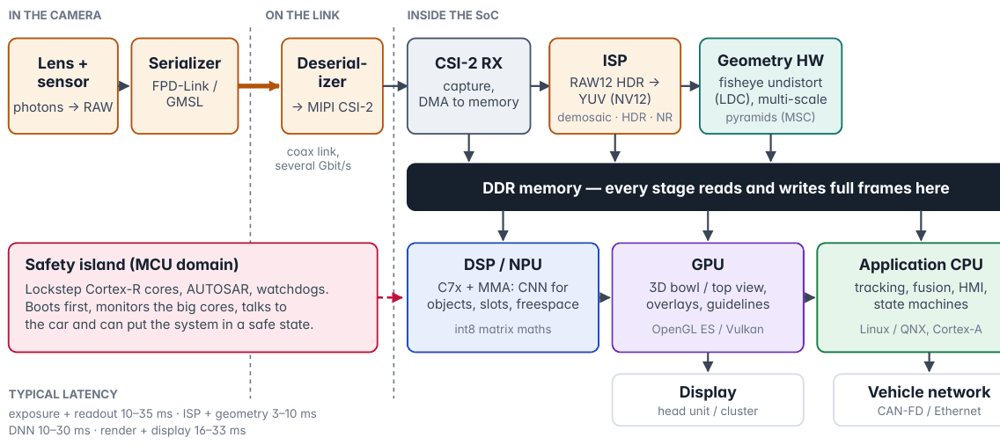
Three observations from this picture shape everything else:
- The work is a pipeline of very different jobs. Converting raw sensor data into colour is fixed, per-pixel arithmetic. Undistorting a fisheye is mostly address calculation and interpolation. A neural network is billions of multiply-accumulate operations on small integers. Tracking and decision logic are full of branches and irregular data. No single processor is good at all of these.
- Memory is the shared highway. Each stage reads a frame, transforms it, and writes a new one. With several megapixel cameras at 30 fps the traffic quickly reaches several gigabytes per second — often the first resource to run out.
- Time is a requirement, not a wish. A rear-view image must appear within a regulated time after selecting reverse (two seconds from shifting in the US rule FMVSS 111), and a braking or parking function needs bounded, repeatable latency. That is why we talk about real-time operating systems, deterministic memory and worst-case execution time.
1.2Why a vision SoC contains a whole zoo of processors
A general-purpose CPU can do any of the jobs above, but it pays for its flexibility with energy and silicon area. Most of the energy in a CPU goes into deciding what to do (fetching and decoding instructions, predicting branches, reordering work) rather than into the arithmetic itself. Specialised engines remove that overhead for one class of problems. The result is the classic trade-off curve below: the more fixed the function, the more operations per watt — and the less you can change it after tape-out.
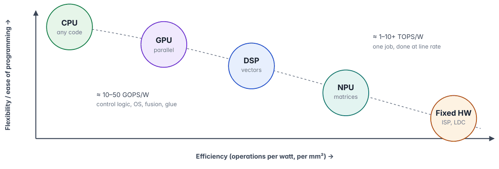
Think of a restaurant kitchen. The head chef (CPU) can cook anything and decides what happens, but is expensive and works on one dish at a time. A team of line cooks (GPU) can each do the same simple step on hundreds of plates in parallel. The pastry station (DSP) has special tools for one family of recipes. The dough machine (NPU) does exactly one thing — enormously fast. The dishwasher (fixed-function ISP) never cooks, but nothing works without it. A good kitchen is fast because the right station does each job and the plates move between them without queues.
1.3Hardware and software layers
On top of the silicon sits a software stack. It is useful to keep the layers apart, because they are owned by different people, certified differently, and fail in different ways. When a customer asks "where does your algorithm run?" the honest answer usually names a layer and a core: for example "a TIOVX node on the C7x, scheduled from Linux on the A72, with a safety monitor on the R5F".
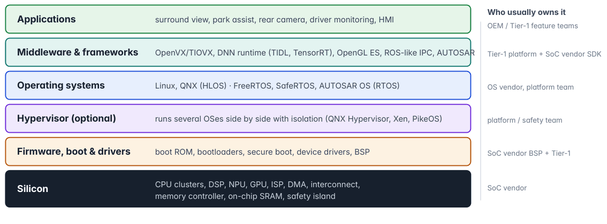
1.4What each role needs to understand
| Role | Must understand deeply | Must be able to explain |
|---|---|---|
| CV / perception engineer | Memory hierarchy and data layout, SIMD and intrinsics, DSP/NPU offload, profiling, fixed-point maths | Why an algorithm takes X ms on target, what limits it, what it would take to make it faster |
| ISP / image quality engineer | ISP pipeline stages, bit depths and formats, HDR, hardware ISP vs software stages, bandwidth per stage, latency | Which processing happens in fixed hardware, what is tunable, where image quality costs compute or memory |
| Technical manager | The role of each block, where the bottlenecks come from, safety and real-time constraints, toolchain maturity | Why a "TOPS" number is not a performance promise, what drives effort and risk, how SoC choices affect the roadmap |
"A camera ECU is a pipeline. Pixels come in over a serial link, a hardware ISP turns raw sensor data into a usable image, hardware blocks correct the lens geometry, a DSP and neural accelerator run the perception, a GPU draws the view, and Arm cores run the application. Everything passes through DDR memory, so bandwidth and latency — not raw compute — usually decide what fits. A separate safety core watches the whole thing."
2Anatomy of a vision SoC
One chip, many specialists, one shared memory system. A PC is built from separate chips on a motherboard: CPU, graphics card, memory modules, network card. An automotive vision processor puts almost all of this on a single die — a System-on-Chip (SoC). That saves power, board space and cost, and it makes data exchange between blocks fast. It also means every block shares the same memory, power and thermal budget, so they can disturb each other.
2.1The blocks on the die
The figure shows a generic vision SoC modelled on the TI TDA4VM, a widely used chip for surround view and parking. Other vendors' chips contain the same kinds of blocks under different names.
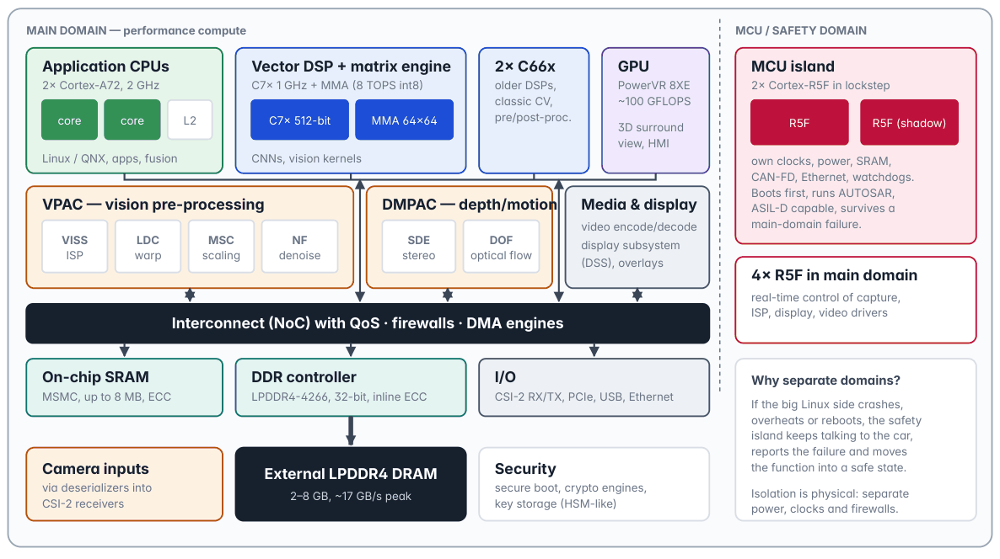
Figure 2.1b shows the same chip on a real board: the back of the BeagleBone AI-64, a development board built around the TDA4VM. Three things are easy to miss in a block diagram. The DRAM is a separate package next to the SoC, so every arrow to "DDR" in Figure 1.1 leaves the chip and crosses the circuit board; that is where the bandwidth and energy costs of Chapter 4 come from. The boot loader, operating system and file system live in yet another chip, the eMMC flash. And the SoC cannot power itself: two power-management ICs (PMICs) generate its many supply rails, switch them on in a defined order and supervise them (Section 5.2).

Under the lid sits a single piece of silicon with all the blocks of Figure 2.1 on it. Figure 2.1c shows what such a die looks like, using a chip whose die photo is freely licensed: the SoC of the PlayStation 4 Pro (AMD, 16 nm). It is not a vision SoC (it has no ISP, imaging accelerators or safety island), but it shows the same principle. Each block is a recognisable region of the chip, the regular grids are repeated compute units and SRAM arrays, and the connections to the outside world (memory, PCIe, display) need large driver circuits called PHYs, which sit along the edge of the die.
What each block is for
| Block | Why it exists | Typical job in a camera product |
|---|---|---|
| Application CPU | Runs any code, an OS with drivers, networking, file systems. Good at branching, irregular logic. | Application state machines, object tracking, sensor fusion, calibration logic, HMI, diagnostics (UDS, DoIP). |
| Vector DSP | Wide SIMD maths with deterministic timing and low power, programmed in C with intrinsics. | Classic CV kernels (filters, features, histograms), DNN pre/post-processing, layers the NPU cannot run. |
| NPU / MMA | Multiply-accumulate arrays for neural networks: one function, extremely efficient. | Object, pedestrian, parking slot and freespace detection; segmentation. |
| GPU | Thousands of simple parallel threads, texture sampling and rasterisation in hardware. | 3D bowl and top-view rendering, guideline overlays, UI composition. |
| ISP (VISS) | Turns raw sensor data into a viewable image at full pixel rate with tiny power. | HDR merge, demosaic, colour, noise reduction, statistics for exposure control. |
| LDC / MSC / NF | Geometry and scaling are needed by every pipeline; fixed hardware does them "for free". | Fisheye-to-rectilinear, perspective views, image pyramids for detectors, resizing for DNN input. |
| DMPAC | Dense stereo and optical flow are too heavy for software at full resolution. | Depth from stereo cameras, motion vectors for moving object detection. |
| DMA engines | Copy data between memories without occupying a processor. | Feeding tiles to DSP SRAM, moving frames between stages, scatter/gather of image regions. |
| Safety MCU | An independent, lockstep, high-integrity controller. | Monitoring, vehicle communication, watchdogs, early-boot rear camera control, safe state. |
2.2The interconnect: the road network inside the chip
Every block that can read or write memory is a master (CPU, DSP, GPU, ISP, DMA, display); every memory or register set it talks to is a slave. The interconnect — on modern chips a network-on-chip (NoC) — routes these requests, a bit like a road network with junctions, lanes and traffic lights.
Two features matter a lot for camera systems. First, Quality of Service (QoS): some masters cannot wait. If the display controller does not get its pixels on time, the screen shows a glitch (an underflow); if the camera capture cannot write, lines are dropped. These "real-time masters" are given priority over, for example, a DNN that can afford to wait a little. Second, firewalls: hardware checks at the junctions decide which master may access which address range. They are how a chip prevents a misbehaving Linux driver from overwriting the memory of the safety core — an essential part of the safety argument (Chapter 14).
The interconnect is the motorway network around a city, DDR is the city centre. Ambulances (display, camera capture) get a blue-light lane (QoS). Trucks (DNN weight loads, GPU textures) carry the most volume but can be held at a junction. Police checkpoints (firewalls) make sure delivery vans do not drive into the military base (the safety island's memory).
2.3DMA: moving data without a processor
Copying an image with a CPU loop means the CPU fetches every byte into a register and writes it back — burning instructions, cache space and energy on work that involves no computation. A DMA engine (Direct Memory Access) is a small, dedicated copier. Software writes a descriptor — "copy a 256 × 64 pixel tile from this address with this line stride to that SRAM buffer, then raise an interrupt" — and the DMA does it while the processor computes something else. Modern DMA engines understand 2D and 3D patterns (rows with strides, planes), which matches images perfectly.
The classic use on a DSP is ping-pong (double) buffering: while the DSP processes tile n in fast on-chip memory, the DMA fetches tile n+1 and writes back the result of tile n−1. When the DMA is hidden behind compute, the DSP never waits for DDR. Chapter 12 shows this in detail for the C7x.
2.4How cores cooperate: interrupts, mailboxes and shared memory
A heterogeneous SoC is a team of processors that each run their own software. They cooperate through three simple mechanisms:
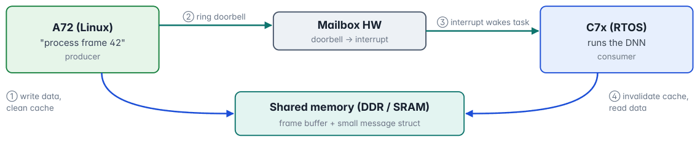
On TI devices this is wrapped by the IPC/RPMsg framework and by TIOVX, which lets you build a graph of processing nodes where each node is assigned to a core ("target"). The framework then generates exactly the sequence above for you. Knowing what happens underneath helps when frames are dropped or data looks stale. Chapter 5 covers the full IPC toolbox, ownership rules and supervision patterns, and why a separate microcontroller is part of almost every design.
2.5Clocks, power and heat
Each block has its own clock and can be powered down or slowed when idle. The power a digital circuit consumes grows roughly with C · V² · f (switched capacitance, voltage squared, frequency). Since a higher frequency also needs a higher voltage, power rises much faster than speed — which is the deep reason why more parallel units at lower clock (DSP, GPU, NPU) beat one very fast core for pixel work. In a sealed camera ECU without a fan, typically limited to a few watts up to a few tens of watts, the thermal budget is as real a constraint as the millisecond budget. When the junction temperature approaches its limit, the system must throttle — and a throttled system can miss its deadlines.
Figure 2.3 makes the thermal side concrete. On a development board on a desk, the TDA4VM gets a finned heatsink that covers almost the whole board, plus a fan header. A sealed ECU in the car has no fan: the same heat must flow through a thermal pad into the housing, so the power budget is a design input from the first architecture sketch, not a late measurement.
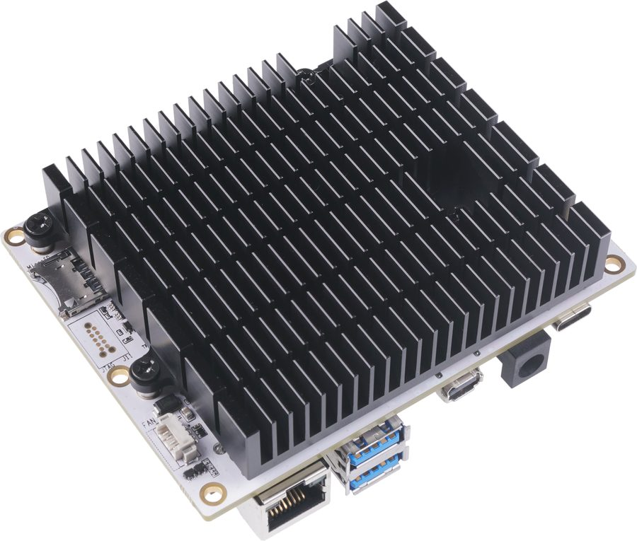

"The SoC is a team of specialists sharing one memory. Fixed-function hardware does the ISP, lens correction and scaling at full pixel rate for almost no power; the DSP and matrix engine run perception; the GPU renders; the Arm cores run the application; and an isolated safety island with lockstep cores supervises everything. They exchange data through shared memory and signal each other with hardware mailboxes. The interconnect gives priority to real-time traffic like display and capture, and firewalls keep the domains from corrupting each other."
3How a CPU actually runs your code
Pipelines, prediction and parallelism — and why a "simple" loop can be slow. A CPU executes a stream of instructions defined by its Instruction Set Architecture (ISA) — the contract between software and hardware, such as AArch64 or x86-64. The ISA says what each instruction does; the microarchitecture (Cortex-A72, Cortex-A78AE, Zen 4…) decides how it is done. Two chips with the same ISA run the same binaries but can differ by a factor of three in speed. Understanding the main tricks of the microarchitecture explains most "why is this slow?" questions.
3.1The basic cycle and the pipeline
Every instruction goes through the same steps: fetch it from memory, decode what it means, execute the operation, access memory if it is a load or store, and write back the result to a register. A naïve CPU would do all five steps for one instruction before starting the next. A pipelined CPU works like an assembly line: while instruction 1 is executing, instruction 2 is being decoded and instruction 3 is being fetched. Once the pipeline is full, one instruction finishes every cycle even though each one takes five cycles from start to end.
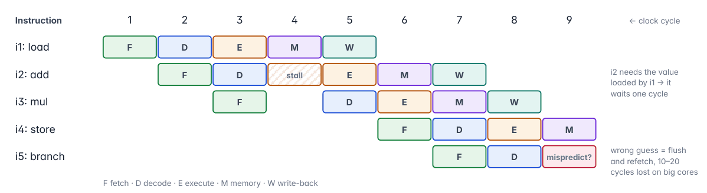
Pipelines make two things expensive. Data dependencies: an instruction that needs the result of a slow predecessor (especially a load that misses the cache) must wait. Branches: at a conditional jump the CPU does not yet know which instruction comes next. Rather than waiting, it predicts — and modern predictors are right well over 95% of the time on regular code. When they are wrong, everything fetched after the branch is discarded. In pixel loops with data-dependent conditions (if (pixel > threshold)) on noisy images, the predictor is often wrong half the time. That is why optimised image code is written branch-free, using min, max and select operations instead of if — something SIMD forces on you anyway.
3.2Superscalar and out-of-order: doing several things per cycle
High-performance cores go further. A superscalar core has several execution units (integer ALUs, a multiplier, load/store units, SIMD units) and can issue several instructions per cycle — the Cortex-A72 decodes three per cycle, newer cores eight or more. An out-of-order (OoO) core also looks ahead in the instruction stream, sometimes more than a hundred instructions, and executes whatever is ready, not necessarily in program order. If instruction 5 waits for memory, instructions 6–20 that do not depend on it run in the meantime. A reorder buffer makes sure results become visible in the original order, so the program cannot tell.
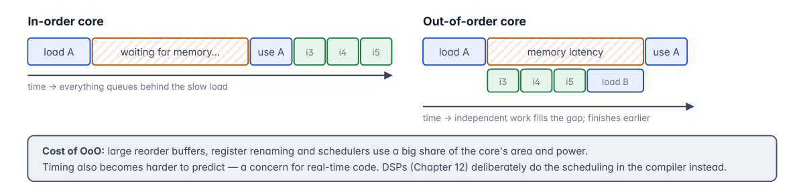
3.3The performance equation
A single line summarises all CPU optimisation:
Execution time = Instructions × Cycles per instruction (CPI) ÷ Clock frequency
Every optimisation attacks one factor. SIMD and better algorithms reduce the number of instructions. Cache-friendly data layout, avoiding mispredicted branches and dependency chains reduce CPI (fewer stall cycles). Frequency is fixed by the chip and the thermal budget — you rarely get to change it.
On a modern core, CPI for well-written code is below 1 (several instructions per cycle). For code that misses the cache constantly it can be 10 or more. A profiler that reports "instructions per cycle" (IPC = 1/CPI) therefore tells you immediately whether you are limited by computation (IPC high) or by waiting (IPC low).
3.4Multi-core: more cores, but not proportionally more speed
Since around 2005, single-core frequency has barely increased; chips gained performance by adding cores. Using them requires splitting the work: process the four cameras on four cores, or split one image into horizontal stripes. Two limits apply. Amdahl's law: if 20% of the work stays serial, no number of cores gives more than 5× speedup. And shared resources: all cores share the L2 or L3 cache and DDR bandwidth — four cores running a memory-bound filter will not be four times faster than one.
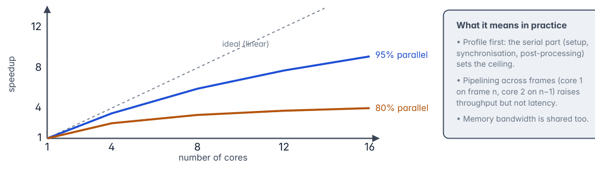
Multiple cores also need their caches kept consistent: if core 0 writes a variable, core 1 must not keep reading an old copy. Hardware cache coherence handles this for cores within a cluster, but it costs performance when two cores write to the same 64-byte cache line ("false sharing" — two counters that happen to sit next to each other can halve performance). Accelerators and DMA are often not coherent, which is the topic of Section 4.6.
3.5Arm core families: A, R and M
Arm designs three families for different jobs, and an automotive SoC usually contains at least two of them.
| Family | Designed for | Key features | Automotive role |
|---|---|---|---|
| Cortex-A | Application processing: maximum performance per watt with a rich OS | MMU (virtual memory), deep OoO pipelines, large caches, NEON/SVE SIMD | Linux/QNX, perception post-processing, fusion, HMI. "AE" variants (A65AE, A78AE, A720AE) add split-lock safety modes. |
| Cortex-R | Real-time: guaranteed fast reaction, predictable timing | MPU (no paging), tightly coupled memory (TCM), fast interrupts, dual-core lockstep | Safety island, AUTOSAR Classic, sensor/ISP control, early boot camera. R5F, R52, R52+. |
| Cortex-M | Microcontrollers: tiny, cheap, very low power | Simple pipeline, MPU, deterministic interrupts | Power management, security/HSM cores, small helper tasks inside SoCs and in cameras. |
Benchmarks from a desktop PC say little about a target. A loop that runs in 2 ms on a laptop core at 4.5 GHz with a 32 MB cache may need 15 ms on a Cortex-A72 at 2 GHz with 1 MB of L2 that is shared with three other jobs. Always measure on target hardware, with the real frame resolution, and with the rest of the system running.
"A modern CPU is an assembly line that guesses ahead. It is fast as long as it can predict branches and its data is already in cache; when it waits for memory or guesses wrong, it stalls. That makes CPUs great for irregular, branchy application logic but wasteful for streaming pixel arithmetic, which is why we move that work to SIMD units, the DSP or fixed-function hardware. Adding cores helps only for the part of the work that is really parallel, and all cores still share the same memory bandwidth."
4Memory: RAM, SRAM, DRAM and caches
Arithmetic is cheap. Moving data is expensive. Almost all optimisation follows from this. If you remember one part of this chapter, make it this one. A multiply on a modern chip costs a fraction of a picojoule and a fraction of a nanosecond. Fetching its operand from external DRAM costs a thousand times more energy and a hundred times more time. Caches, on-chip SRAM, DMA, tiling, SIMD loads, the C7x streaming engine and the ISP being "on the fly" hardware are all answers to the same problem: keeping the arithmetic units fed with data.
4.1Why there is a hierarchy
We would like memory that is large, fast and cheap. Physics lets us pick two. Small memories built from transistors close to the logic are fast; large memories built from dense capacitors on a separate chip are cheap per bit but slow. So every processor builds a pyramid: a few very fast registers at the top, then levels of cache and on-chip SRAM, then gigabytes of DRAM at the bottom. Hardware (caches) or software (DMA into scratchpad SRAM) moves data up the pyramid just before it is needed.
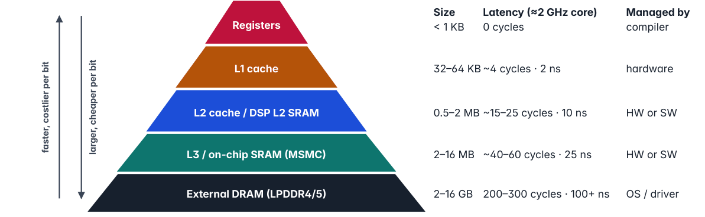
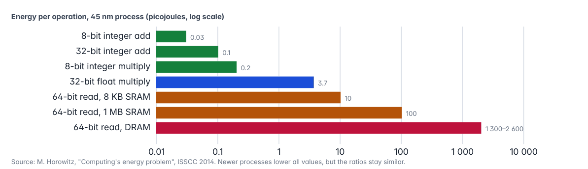
4.2SRAM versus DRAM: two ways to store a bit
SRAM (static RAM) stores each bit in a small circuit of six transistors — two inverters feeding each other, so the bit stays as long as power is applied. It is fast (reads in a nanosecond or less), needs no refresh and is built in the same process as the logic, so it sits right next to the cores. The price is area: six transistors per bit. That is why caches and on-chip SRAMs are measured in kilobytes and megabytes.
DRAM (dynamic RAM) stores each bit as charge in a tiny capacitor behind one transistor. That is extremely dense, so a chip holds gigabits. But the charge leaks away, so every row must be refreshed (read and rewritten) every few tens of milliseconds, and reading is destructive and slow. DRAM uses a separate manufacturing process, so it lives on separate chips next to the SoC — and every access travels over the board.
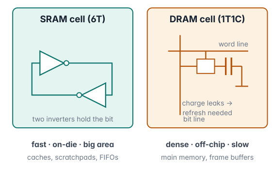
4.3How a DRAM access really works
A DRAM chip is organised as several banks, each a large grid of rows and columns. To read anything, the controller first activates a whole row (often 1–2 KB), copying it into the bank's row buffer. Then it can read columns from the row buffer quickly, in bursts. To access another row in the same bank, it must first write the row back (precharge) and activate the new one.
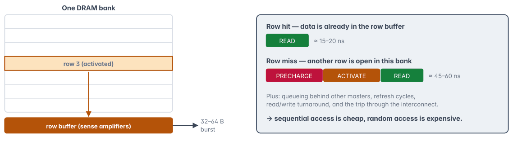
For images this has a direct consequence. Reading an image line by line streams through rows: nearly every access is a row hit and the bus runs close to its peak rate. Reading the same image column by column — or doing a lens-distortion remap that jumps across the frame — causes row misses and can lose half or more of the available bandwidth. Hardware such as TI's LDC therefore processes the output in blocks and fetches the corresponding input region as a block, not pixel by pixel.
4.4Bandwidth: the budget that runs out first
Peak DRAM bandwidth is simple to compute: transfer rate × bus width. LPDDR4 at 4266 MT/s (mega-transfers per second) on a 32-bit bus gives 4266 × 4 bytes ≈ 17 GB/s. LPDDR5/5X at 6400–8533 MT/s and wider buses push high-end chips towards 50–200 GB/s. In practice only 60–80% of the peak is usable because of refresh, row misses, read/write switching and arbitration.
Four 2-megapixel cameras (1920 × 1080) at 30 fps produce 4 × 2.07 M × 30 ≈ 250 Mpixel/s. Raw data stored as 16-bit words is 2 bytes/pixel; YUV 4:2:0 (NV12) is 1.5 bytes/pixel. Every stage that reads a frame and writes a new one adds traffic. The bar below adds up a plausible surround-view + parking pipeline.
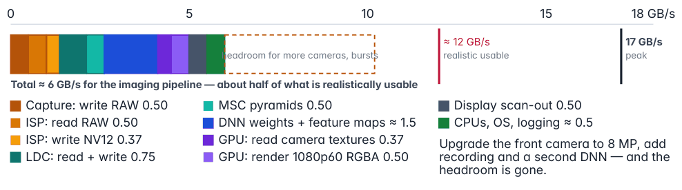
The lesson for architecture discussions: count frame passes. Every time a full frame goes to DDR and comes back, you pay for it twice. Hardware that processes "on the fly" (sensor → ISP → LDC without writing intermediate frames), fusing several software steps into one pass, and processing in tiles that stay in on-chip SRAM are the main techniques to reduce traffic.
4.5How a CPU cache works
A cache is a small, fast SRAM next to the core that automatically keeps copies of recently used memory. The program never addresses it directly: every load and store goes to the cache first, and only if the data is not there (a miss) does the request travel further down the hierarchy. Caches work because real programs have locality: temporal locality (data used now is likely to be used again soon — filter coefficients, loop variables, a lookup table) and spatial locality (data next to it is likely to be used next — the neighbouring pixels in a row).
Cache lines: the unit of transfer
The cache never stores single bytes. It stores cache lines — aligned blocks of 64 bytes on Cortex-A cores (other processors use 32–128 bytes). When the CPU reads one pixel, the whole 64-byte line containing it is fetched; the next 63 pixels are then free. This is why walking an image row by row is cheap and walking it column by column is expensive (Figure 4.9 below).
Where can a line live? Sets, ways and tags
To find data quickly, the cache splits every address into three fields. The lowest bits are the offset inside the line; the middle bits, the index, select one set; the remaining high bits, the tag, identify which of the many memory lines that map to this set is actually stored there. A set has a few slots, called ways: in an N-way set-associative cache, a line can live in any of the N ways of its set. The lookup compares the tag with all N stored tags in parallel; a match is a hit.
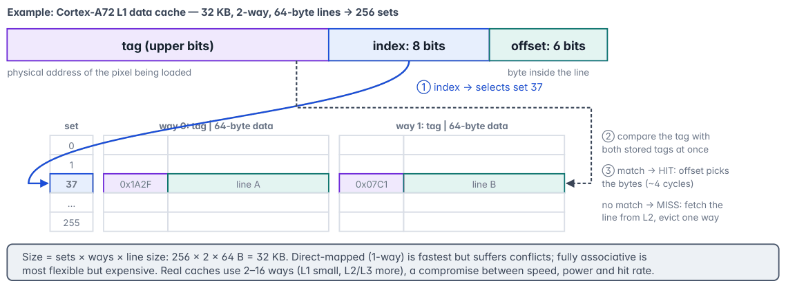
What happens on a miss, and what happens on a write
On a miss, the cache requests the whole line from the next level (L2, then L3 or on-chip SRAM, then DDR) and must make room for it by evicting one of the ways of that set, usually the least recently used (LRU) one or an approximation of it. The core may continue with other instructions in the meantime (Chapter 3), but anything that needs the data waits.
Writes follow a policy. Most CPU caches are write-back: a store only updates the line in the cache and marks it dirty; the line is written to memory later, when it is evicted or explicitly cleaned. This saves enormous bandwidth when the same data is written many times, but it means memory can hold old data for a long time — the root of the DMA problem in Section 4.6. Write-through caches write to memory on every store; simpler and always consistent, but slower. Memory regions can also be marked non-cacheable (device registers) or write-combining (frame buffers that the CPU only writes sequentially), via the MMU page attributes.
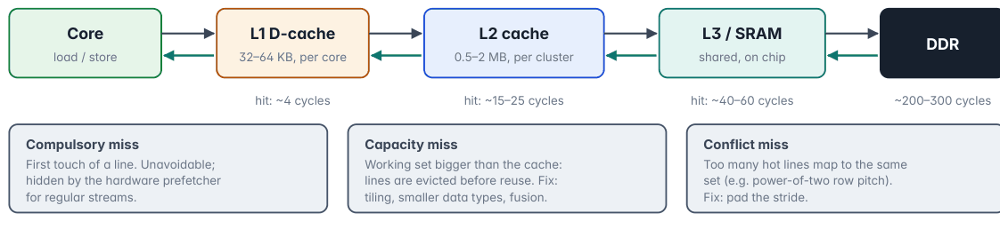
An image with a row pitch of exactly 4096 bytes places pixel (x, y) and pixel (x, y+1) at addresses that differ only in bits above the index field. A 3×3 or 5×5 filter that reads several rows at the same column therefore hammers one set — and with only 2 ways, the rows keep evicting each other. Performance can drop several-fold for no visible reason. Padding the pitch to 4096 + 64 bytes spreads the rows over different sets and fixes it.
Several cores, one memory: coherence
Each core has its own L1. If core 0 writes a value that core 1 has cached, core 1 must not keep reading its old copy. Within a cluster, hardware keeps the caches coherent with a protocol such as MESI: every line is Modified (only my copy, dirty), Exclusive (only my copy, clean), Shared (several clean copies) or Invalid.
Before a core writes a line, the protocol invalidates all other copies; when another core later reads it, it gets the new data from the owner.
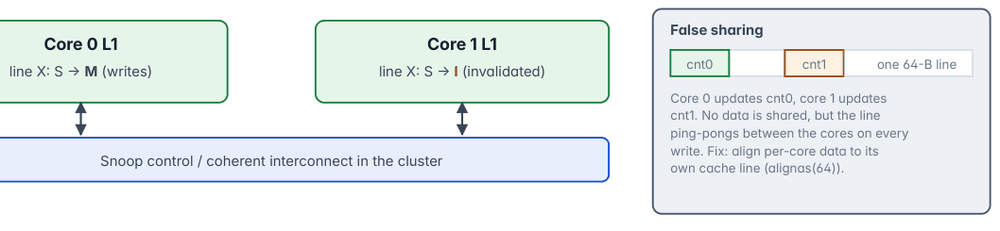
Measuring cache behaviour
You do not have to guess. Every Cortex-A core has a Performance Monitoring Unit (PMU) with counters for L1 and L2 refills, TLB misses, stalled cycles and instructions retired. On Linux, perf stat -e L1-dcache-load- misses,cache-misses,instructions,cycles ./app gives a first picture; TI's and Arm's tools expose the same counters on RTOS cores. A miss rate of a few percent in L1 is normal for image code; a low IPC with high L2 refills means the kernel is memory-bound and tiling or fusion will help more than SIMD.
Locality in practice: access patterns
A hardware prefetcher watches the stream of misses and, when it detects a regular pattern (consecutive lines, or a constant stride), fetches lines before they are requested. Regular, row-wise access therefore gets most of its misses hidden; random or column-wise access gets none.
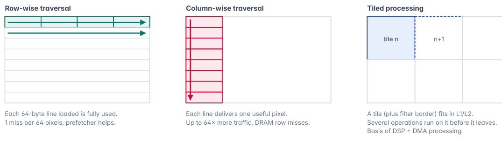
Practical rules that follow: store images row-major and walk them row by row; keep inner loops on the contiguous dimension; prefer planar or semi-planar layouts (separate Y and UV planes) when an algorithm works on one channel; transpose with a blocked algorithm rather than naïvely; and when several operations run on the same image, apply them all to one tile before moving on (loop fusion), rather than running each operation over the whole frame.
4.6Cache coherence with DMA and accelerators
A CPU cache is a private copy. When the CPU writes an image, the new pixels may sit in its cache (a write-back cache) and not yet be in DDR. If the ISP, DSP or a DMA engine — which do not look into the CPU cache — now read that buffer from DDR, they see old data. The reverse happens too: an accelerator writes a result to DDR, but the CPU still holds stale lines of that buffer in its cache.
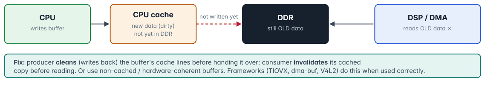
4.7Virtual memory, MMUs and buffer sharing
On Cortex-A cores every program sees its own virtual address space. The MMU (memory management unit) translates virtual to physical addresses in 4 KB (sometimes 16/64 KB) pages, using page tables set up by the OS, and caches recent translations in a TLB. This gives isolation (a crashing process cannot overwrite another) and lets the OS place memory anywhere. Two consequences matter for imaging:
- A frame that is contiguous in virtual memory may be scattered in physical memory. Accelerators without their own MMU need physically contiguous buffers, typically from a reserved region (Linux CMA or a carve-out defined in the device tree). Many SoCs add an IOMMU / SMMU so accelerators can also use virtual addresses — which also confines them to their own buffers, a safety and security benefit.
- Copying frames between processes or frameworks is expensive. Zero-copy buffer sharing (Linux
dma- buf, TIOVX object descriptors, QNX shared memory) passes a handle to the same physical memory from capture to ISP to DNN to display. Accidental copies — for example converting to an OpenCVMatin the middle of a pipeline — are among the most common causes of "missing" milliseconds.
4.8ECC and memory protection
Memory cells can flip because of radiation, voltage noise or ageing. ECC (error-correcting code) stores extra check bits — typically SECDED, which corrects any single-bit error and detects double-bit errors in a word. Automotive SoCs protect caches, SRAMs and the DDR interface with ECC; for LPDDR4, TI uses inline ECC, where check bits are stored in the same DRAM and cost some capacity and bandwidth. Combined with MPUs, MMUs and firewalls that stop one software partition from writing into another's memory, ECC is a basic building block of the safety case (Chapter 14).
"On these chips, computing is cheap and moving data is expensive — a DRAM access costs as much energy as tens of thousands of additions. So the architecture is built around keeping data close: caches and on-chip SRAM, DMA that prefetches tiles, and hardware blocks that process pixels on the fly. For our pipeline, the real budget is DDR bandwidth: we count how many times each frame goes to memory and back, and we design to keep that number low."
5MCU versus CPU, and how cores talk
Why a chip with 8 TOPS still needs a small microcontroller — and how the two cooperate. Newcomers to automotive often ask: the SoC has powerful Arm cores, DSPs and a neural accelerator — why is there still a microcontroller on the board or inside the chip? The short answer is that the two kinds of processor are optimised for opposite goals. The application processor maximises throughput; the microcontroller maximises availability, determinism and integrity. A camera ECU needs both, and most of the interesting engineering happens in how they communicate.
5.1Two kinds of processor
An application processor (Cortex-A class, often just called "the CPU" or "the SoC") is built for heavy computation with a rich operating system: high clock, deep pipelines, out-of-order execution, large caches, an MMU for virtual memory, and gigabytes of external DRAM. A microcontroller (MCU) is a complete small computer on one chip: a modest core (Cortex-R, Cortex-M, Infineon TriCore, Renesas RH850), its program in on-chip flash, its data in on-chip SRAM, and a rich set of peripherals for the physical world — CAN-FD, LIN, Ethernet, timers, PWM, ADCs, GPIOs. It has no external DRAM and needs none. An application processor's DRAM and flash are separate chips next to it, as the board photo in Figure 2.1b shows.
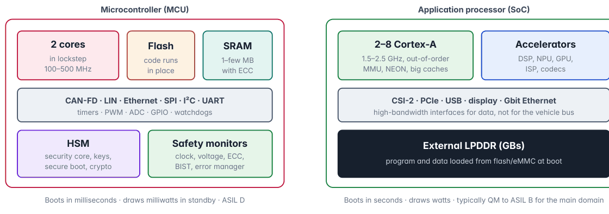
| Microcontroller | Application processor | |
|---|---|---|
| Optimised for | Determinism, availability, integrity, low power | Throughput, rich software, large data |
| Memory | On-chip flash + SRAM, physical addressing, MPU | External DRAM, virtual memory, MMU, caches |
| Timing | Cycle-predictable; interrupt response in tens of ns | Variable (caches, OoO, OS); microseconds of jitter |
| Start-up | Milliseconds from power-on, code executes from flash | Seconds: bootloaders, DDR training, kernel, file systems |
| Software | AUTOSAR Classic or an RTOS, statically configured | Linux, QNX, Android, AUTOSAR Adaptive |
| Safety | Lockstep cores, designed for ASIL D | Usually QM–ASIL B; ASIL D only in special islands |
| Power | mW in standby, can stay awake while the car is parked | W when running; usually fully off when the car sleeps |
5.2Why the camera ECU still needs an MCU
Each of the following jobs is either impossible or uneconomical for the application processor alone:
- Owning the vehicle network. The ECU must answer CAN and Ethernet messages, network management and UDS diagnostics within milliseconds, also while the big cores are booting, updating or crashed. AUTOSAR Classic on an MCU is the proven, certified way to do that.
- Sleeping and waking. When the car is parked, the ECU must draw almost nothing yet still recognise a wake-up message on the bus. The MCU (or a small always-on domain) listens; the SoC is completely off and is powered up by the MCU only when needed.
- Power sequencing and supervision. A large SoC needs its supply rails switched on in a specific order with specific timing, and its resets released correctly. The MCU, together with the power-management IC (PMIC), does this and supervises temperatures and voltages.
- Being the independent safety monitor. The principle of functional safety is that a component cannot reliably detect its own failure. The MCU supervises the SoC with heartbeats and plausibility checks, and if the SoC misbehaves it can reset it, inform the car and put the function into a safe state (Chapter 14).
- Fast, deterministic reaction. Some actions must happen in a guaranteed few milliseconds — switching the display to a fallback, triggering a warning, answering a request from the braking ECU. That is easy on an MCU and hard to guarantee on Linux.
- Security anchor. MCUs typically contain a Hardware Security Module (HSM) with protected keys for secure boot, secure on-board communication (SecOC) and secure updates.
The SoC is a brilliant specialist surgeon; the MCU is the anaesthetist. The surgeon does the impressive work, but the anaesthetist arrives first, watches the vital signs the whole time, talks to the rest of the hospital, and is the one who stops the operation if something goes wrong. You would never let the surgeon monitor their own patient's heartbeat while operating.
External MCU or integrated MCU island?
There are two common architectures. In the first, the board carries a separate automotive MCU (for example Infineon AURIX, Renesas RH850 or NXP S32K) next to the vision SoC. In the second, the SoC itself contains an isolated MCU domain — on TI's TDA4 family, a pair of lockstep Cortex-R5F cores with their own power, clocks, memory and CAN/Ethernet interfaces. The integrated approach saves a chip, board area and cost; the external approach offers stronger independence (separate silicon, separate power) and lets OEMs reuse an existing, certified MCU software stack. Many cost-sensitive camera ECUs use the integrated island; many central compute platforms still pair the SoC with an external safety MCU.
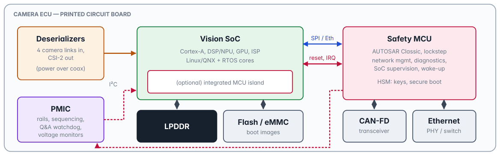
5.3Lockstep: catching hardware faults as they happen
A single core cannot tell when a radiation hit or a silicon defect corrupts a calculation — the wrong result simply looks like a result. Lockstep runs two identical cores on the same instructions with the same inputs, typically offset by a couple of clock cycles, and a hardware comparator checks their outputs every cycle. Any mismatch raises an error immediately, long before the corrupted value can reach the vehicle. This is the backbone of ASIL D processing in MCUs and safety islands. Some newer application cores (Cortex-A78AE, A720AE) offer a split-lock mode: the same pair runs either independently for performance or in lockstep for safety.
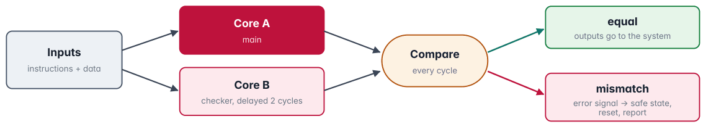
5.4How cores communicate: the building blocks
Whether the partner is the DSP next door or a microcontroller on the other side of the board, inter-processor communication (IPC) is built from a small set of mechanisms. Chapter 2 showed the basic idea; here is the full toolbox.
| Mechanism | What it is | Used for |
|---|---|---|
| Shared memory | A region of DDR or on-chip SRAM that both sides can read and write. Fast, but needs agreed ownership rules, cache maintenance and barriers. | Frames, tensors, large results — always passed by reference (pointer or handle), never copied |
| Mailbox / doorbell | A hardware register block: writing to it raises an interrupt on the other core and can carry a small word of data. | "There is a new message", wake-ups |
| Message queue in shared memory | A ring buffer of descriptors plus a doorbell: Linux RPMsg/virtio, TI IPC, OpenAMP. | Commands, small results, buffer hand-over |
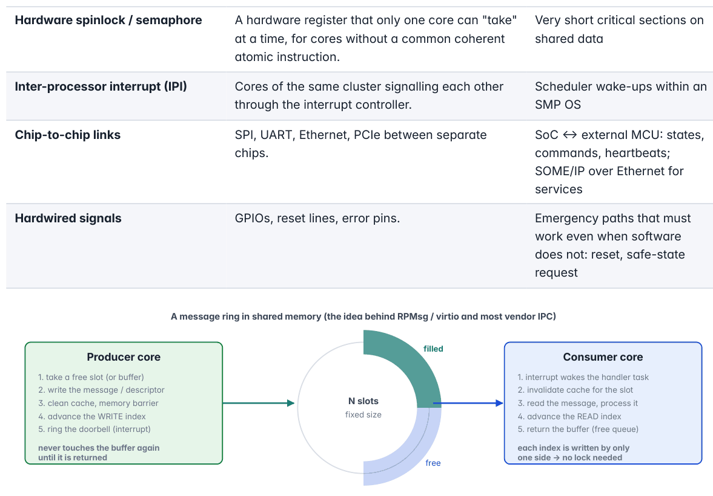
Almost every IPC bug is an ownership bug: two cores believing they may use the same buffer at the same time. Make ownership explicit — a buffer belongs to exactly one side at any moment, and passing a message transfers ownership. Pools of pre-allocated buffers with "free" and "ready" queues, as used by capture drivers and frameworks like TIOVX, make the rule mechanical.
5.5Communication patterns for camera systems
- Streaming pipeline. Frames flow capture → ISP → DSP → CPU → display, each stage receiving a reference, processing, and passing it on. Throughput is set by the slowest stage; enough buffers are needed so that stages do not wait for each other (typically 3–6 per stream).
- Request / response. "Run the DNN on this frame" — "here are the detections". Simple, but the requester must handle the case where no response comes.
- Publish / subscribe. Results (objects, slots, calibration status) are published and any interested component consumes them; on vehicle Ethernet this is the SOME/IP service model.
- Heartbeat and alive supervision. The monitored side sends a counter at a fixed rate; the monitor checks that it arrives, increments correctly and is on time. This detects crashed, hung or overloaded software.
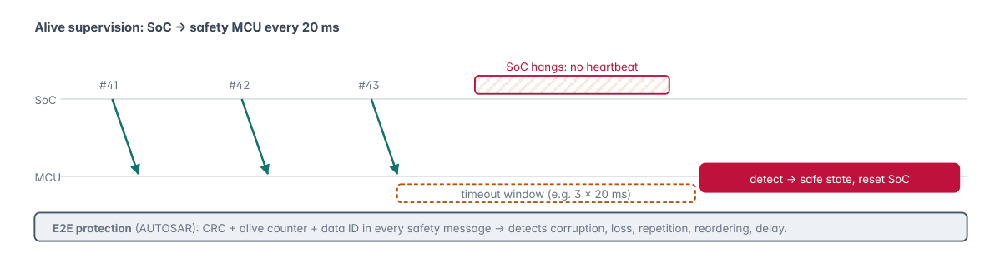
5.6What IPC costs
Mailbox interrupt between cores: about 1–5 µs to wake the receiving task. Message through an RPMsg-style queue including OS scheduling: roughly 10–100 µs, depending on the OS and load. A 64-byte SPI transfer between SoC and external MCU at 10–20 MHz: tens of µs plus driver overhead. Copying a 2 MP NV12 frame (3 MB) with a CPU: on the order of a millisecond and several MB of DDR traffic — which is why frames are never sent, only their handles.
The practical consequences: batch small messages (one message per frame, not per object), keep the number of hand-overs between engines low, use zero-copy buffers, and make every receive operation time out so that a silent partner is detected instead of hanging the pipeline.
"The SoC is optimised for throughput, the microcontroller for availability and integrity. The MCU boots in milliseconds, owns the vehicle network and diagnostics, sequences the SoC's power, wakes it from sleep, and supervises it independently — a component can't reliably monitor itself. It runs AUTOSAR on lockstep cores for ASIL D. The cores exchange data through shared memory and only pass references, signal each other with hardware mailboxes, and protect safety-relevant messages with CRC, counters and timeouts, so a hung or faulty partner is always detected."
6Operating systems: why, how, and which one
The software that shares the hardware fairly — or, in real-time systems, predictably. An operating system is the layer that turns raw hardware into something many programs can share safely. It decides who runs when, who may touch which memory and devices, and it hides the details of each chip behind standard interfaces. In a camera ECU you will usually find several operating systems at once, each chosen for what its core has to guarantee: rich features and ecosystem, or hard timing and certifiability.
6.1Why not just run the code directly?
Small microcontrollers often run bare metal: one while(1) loop that polls inputs and calls functions, plus interrupt handlers. That is simple and perfectly predictable — until the system has many activities with different urgencies, several programs written by different teams, networking, file systems and dozens of drivers. Then you need someone to share the CPU (scheduling), share memory safely (isolation), manage devices (drivers with a common interface), and provide services (timers, communication, files, networking). That someone is the OS.
6.2Kernel space and user space
The CPU has privilege levels. The OS kernel runs at a privileged level (Arm EL1) and may configure the MMU, handle interrupts and access hardware registers. Applications run unprivileged (EL0) in their own virtual address space. When an application needs something only the kernel may do — read a file, wait for a camera frame, allocate a buffer — it makes a system call, a controlled jump into the kernel. Hardware events arrive as interrupts: the CPU suspends what it is doing, runs a short interrupt handler, and the scheduler may then switch to a thread that was waiting for that event.
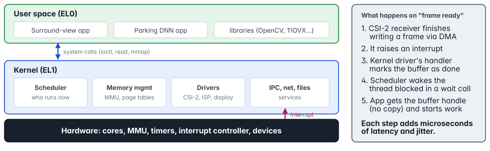
6.3Threads and scheduling
A process is a running program with its own address space; a thread is one sequence of execution inside it, and threads of one process share memory. The scheduler decides which thread runs on which core. Desktop schedulers (Linux's default fair scheduler) aim for throughput and fairness: everyone gets a share. Real-time schedulers aim for predictability: the highest-priority ready thread always runs, immediately preempting lower-priority ones.
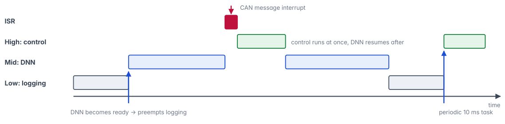
6.4What "real-time" really means
Real-time does not mean fast; it means on time, every time. A hard real-time task must never miss its deadline (airbag, brake command). A soft real-time task degrades gracefully if it occasionally does (a dropped preview frame). The relevant numbers are not averages but the worst case: worst-case execution time (WCET) of the code, and worst-case latency from an event to the reaction. A general-purpose OS can be faster on average and still be unsuitable because of a long, rare tail.
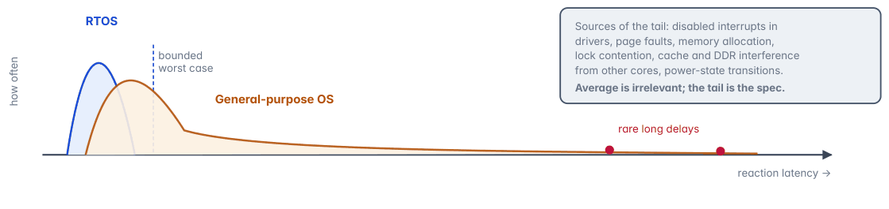
A classic real-time trap is priority inversion: a low-priority thread holds a lock that a high-priority thread needs, and a medium-priority thread keeps running and starves both. The cure is priority inheritance (the lock holder temporarily inherits the waiter's priority), which RTOSes and Linux real-time mutexes support — but only if you use the right primitive. Chapter 7 takes a closer look at how an RTOS works, the concepts you program with, and what makes a safety-certified RTOS such as SafeRTOS different.
6.5The operating systems you will meet
| OS | Type and strengths | Typical use |
|---|---|---|
| Linux | Monolithic kernel, huge driver and tool ecosystem, POSIX. Not certified for ASIL functions. | Prototyping, QM functions, perception compute, infotainment. |
| QNX Neutrino | POSIX microkernel RTOS; drivers run as isolated processes; safety-certified variants up to ASIL D. | Production ADAS, digital cockpits, hypervisor host. |
| FreeRTOS / SafeRTOS | Small RTOS kernels; SafeRTOS is the pre-certified derivative. | R5F and DSP cores, drivers, firmware. |
| AUTOSAR Classic OS | OSEK-based, fully static configuration, no dynamic memory. | Safety MCU: CAN/Ethernet, diagnostics, monitoring. |
| AUTOSAR Adaptive | Middleware on a POSIX OS; service-oriented (SOME/IP), dynamic deployment. | High-performance ECUs, zonal/central computers. |
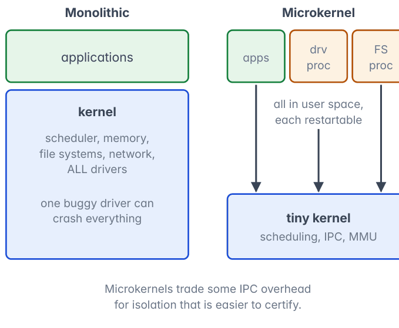
6.6Hypervisors and mixed criticality
A hypervisor runs underneath operating systems (at Arm EL2) and gives each one a virtual machine with its own share of cores, memory and devices. This allows mixed criticality on one chip: a safety-certified QNX partition running the parking function next to a Linux partition running non-safety features, with the hypervisor guaranteeing that the Linux side cannot corrupt the safety side's memory or steal all its CPU time. The hard part is shared hardware that the hypervisor cannot easily partition: caches, DDR bandwidth and accelerators. Vendors address this with cache partitioning, bandwidth regulators and QoS settings.
6.7One SoC, several operating systems
Heterogeneous SoCs usually run in AMP mode (asymmetric multiprocessing): each core or cluster runs its own OS image, chosen for its job. The TI Jacinto software development kits are a good example.
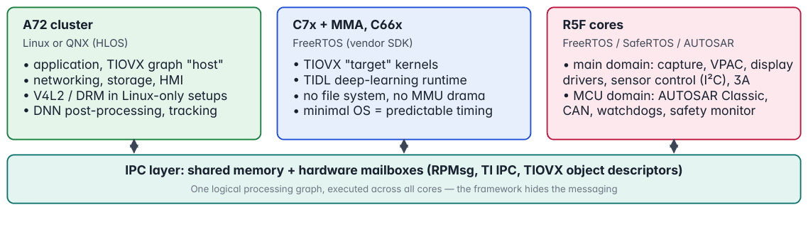
6.8Boot: why the rear camera starts before Linux
From power-on, a complex SoC needs several seconds before Linux and the full application are ready. The rear-view camera cannot wait that long — the US rule FMVSS 111 requires the image within two seconds of selecting reverse, and customers expect it much sooner. Systems therefore boot in stages, and the safety/real-time side brings up a minimal camera path first.
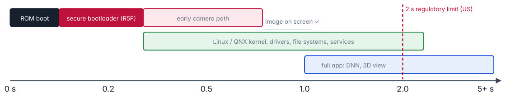
6.9How Linux sees cameras and displays
In Linux, cameras are usually V4L2 devices (Video4Linux2): the application requests buffers, queues them, and dequeues filled ones; a media controller describes the chain sensor → deserializer → CSI-2 receiver → ISP. Displays use DRM/KMS, GPUs use OpenGL ES/Vulkan through the vendor driver, and buffers are passed between them as dma-buf handles to avoid copies. On production TDA4 systems, much of the camera and ISP control instead runs on R5F firmware and is exposed to Linux or QNX through TIOVX — the principles are the same.
"Each core runs the lightest operating system that gives it what it needs. The big Arm cores run Linux or QNX for the application and ecosystem; the DSP runs a small RTOS so its timing is predictable; the real-time cores run drivers and AUTOSAR; the safety island runs certified software that can always reach the car. Real-time means a guaranteed worst case, not a good average. And the camera path is brought up early from the real-time side, long before Linux has finished booting."
7Real-time operating systems and SafeRTOS
Small kernels whose job is to be predictable — and, when certified, provably so. On a TDA4-class chip, the cores that control capture, the ISP and the display, the DSPs that run the vision kernels, and the safety island all run an RTOS, not Linux. An RTOS is not "a smaller Linux". It is a different kind of software: a scheduling library linked into one application, with a few well-defined services whose timing you can reason about on paper. This chapter explains the concepts you program with, how to check that deadlines will be met, how an RTOS differs from a general-purpose OS, and what a safety-certified RTOS such as SafeRTOS adds.
7.1What an RTOS is — and is not
A typical RTOS kernel is a few thousand lines of C and a few kilobytes of code. It is compiled and linked together with the application into one binary that runs from the moment the core starts. There is usually no separate kernel image, no file system, no dynamic loading of programs and often no virtual memory: all tasks share one address space, optionally fenced by an MPU. What the kernel provides is a small set of services — tasks, a priority scheduler, time, synchronisation and communication — implemented so that each operation takes a short, bounded time.
Linux is a big airport: many airlines, shops, security lanes and a sophisticated system that keeps everyone moving on average — but your flight can still be delayed by events elsewhere. An RTOS is a railway timetable on a dedicated line: few trains, fixed priorities, every movement planned so that the express always arrives on time.
7.2The core concepts
Tasks and their states
A task (thread) is a function with its own stack and priority that normally runs forever in a loop: wait for something, process it, wait again. At any moment each task is in one of a few states, and the scheduler's whole job is to keep the highest-priority Ready task Running.
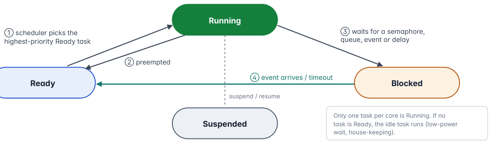
Priority-based preemptive scheduling and time
Each task has a fixed priority set by the designer. When a higher-priority task becomes Ready — because an interrupt gave it a semaphore, or its delay expired — the kernel switches to it immediately, even in the middle of a lower-priority task. Tasks of equal priority may share the CPU by time slicing. Time is kept by a periodic tick interrupt (often 1 ms); delays and timeouts are counted in ticks. Low-power systems use a tickless mode that programs the timer only for the next real deadline.
Interrupts and deferred processing
Interrupt service routines (ISRs) run above all tasks, so they must be very short: acknowledge the hardware, grab the minimum data, signal a task, return. The real work happens in a task whose priority the designer controls. This "top half / bottom half" split keeps interrupt latency low for everyone.
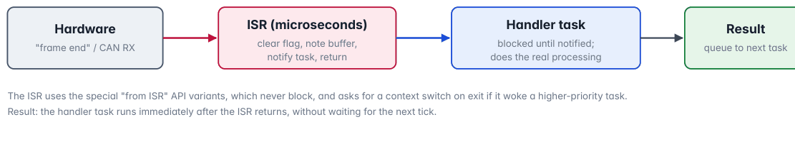
// FreeRTOS-style example: frame-end interrupt wakes a processing task
static TaskHandle_t procTask;
void CSI_FrameEnd_ISR(void)
{
BaseType_t woken = pdFALSE;
csi_clear_irq(); // minimal hardware work
vTaskNotifyGiveFromISR(procTask, &woken); // signal the task (never blocks)
portYIELD_FROM_ISR(woken); // switch now if it has higher priority
}
void ProcTask(void *arg)
{
for (;;) {
if (ulTaskNotifyTake(pdTRUE, pdMS_TO_TICKS(50)) == 0) {
report_timeout(); // no frame for 50 ms: a safety-relevant event
continue;
}
process_frame();
}
}Synchronisation and communication
| Primitive | What it does | Typical use |
|---|---|---|
| Binary semaphore / task notification | A signal: "something happened". Notifications are a lighter, faster form addressed to one task. | ISR → task wake-up, frame-done events |
| Counting semaphore | Counts available resources or pending events. | Free buffers in a pool, queued requests |
| Mutex | Mutual exclusion with an owner, normally with priority inheritance. | Protecting a shared driver, an I²C bus to the sensor |
| Queue / message buffer | Copies small messages between tasks in FIFO order; blocks when full or empty. | Commands, results, buffer handles (not whole images) |
| Event group | A set of flags a task can wait on in combinations ("all four cameras ready"). | Synchronising multi-camera pipelines |
| Software timer | Calls a function after a delay or periodically, from a timer service task. | Timeouts, periodic status messages |
| Critical section | Briefly disables interrupts or scheduling. | A few instructions of shared-data update — keep it very short |
Priority inversion and inheritance
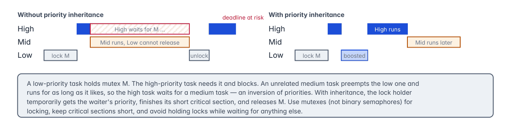
Memory: static, bounded, and checked
General-purpose code allocates memory whenever it likes. In an RTOS, and especially in safety code, memory is allocated statically or once at start-up: task stacks, queues and buffers are sized at design time, and nothing is allocated or freed during operation. This removes the two classic long-term failures of embedded systems — fragmentation and out-of-memory after hours of running — and makes timing predictable. Each task has its own fixed-size stack, so stack sizing becomes an engineering task: measure the high-water mark, add margin, and enable the kernel's stack-overflow checking. Where the core has an MPU, tasks can be restricted to their own memory regions so that a bug in one cannot overwrite another.
7.3Will every deadline be met? Schedulability analysis
The big advantage of a simple, fixed-priority RTOS is that you can prove timing, not just test it. Classic rate- monotonic theory says: give shorter periods higher priorities. For n independent periodic tasks, the deadlines are guaranteed if the total CPU utilisation is below n(21/n − 1) — about 78% for three tasks and 69% for many. If the load is higher, response-time analysis gives an exact answer: a task's worst-case response time is its own execution time plus all interference from higher-priority tasks that can be released while it waits.
| Task (R5F) Capture / ISP control Vehicle CAN messages Auto-exposure / AWB (3A) | Period 10 ms 20 ms 33 ms | WCET 2 ms 3 ms 5 ms | Utilisation 20% 15% 15% | Priority high medium low | Response time of the 3A task: start with R = 5 ms. In 10 ms, the capture task runs once (2 ms) and the CAN task once (3 ms): R = 5 + 2 + 3 = 10 ms. Recomputing with R = 10 gives the same value, so the worst case is 10 ms, well inside its 33 ms period. The whole argument rests on correct WCET numbers — measured with margin or computed by static analysis tools — which is why cache and memory interference (Chapter 4) matter so much. |
|---|---|---|---|---|---|
| Total | 50% | bound 78% ✓ |
7.4How an RTOS differs from Linux
| RTOS (FreeRTOS, SafeRTOS, AUTOSAR OS) | Linux (general-purpose) | |
|---|---|---|
| Goal | Bounded worst-case latency, determinism | Throughput, fairness, features |
| Size | Kilobytes; boots in milliseconds | Megabytes; boots in seconds |
| Structure | Library linked with one application, one address space (MPU optional) | Separate kernel, processes with virtual memory (MMU) |
| Scheduling | Fixed priorities, strict preemption, designer decides | Fair scheduler by default; RT classes available |
| Memory | Static, sized at design time | Dynamic, demand paging, overcommit |
| Drivers and ecosystem | Minimal, often vendor-specific | Huge: networking, file systems, USB, GPU, tools |
| Analysability | Small enough for schedulability analysis and certification | Too large and dynamic for ASIL certification |
| Failure isolation | Limited (MPU regions at best) | Strong between processes |
7.5The RTOS landscape in automotive
- FreeRTOS — the most widely used open-source RTOS (MIT licence, maintained by AWS). Default on many vendor SDKs, including TI's Jacinto SDKs for R5F and DSP cores. Not safety-certified itself.
- SafeRTOS — a safety-certified RTOS built on the same functional model as FreeRTOS (Section 7.6).
- AUTOSAR Classic OS — derived from OSEK/VDX. Everything (tasks, priorities, alarms, resources) is configured statically in ARXML and generated into code. Its scalability classes add timing protection (execution budgets) and memory protection between OS-Applications. Standard on the safety MCU and on classic ECUs.
- Eclipse ThreadX (formerly Azure RTOS), Zephyr, PikeOS, INTEGRITY, VxWorks — other options, some with safety certification and separation-kernel capabilities.
- QNX Neutrino — a full POSIX RTOS with a microkernel and MMU-based process isolation, used on application cores where an RTOS with rich features is needed (Chapter 6).
7.6SafeRTOS: what a safety-certified RTOS adds
SafeRTOS, from WITTENSTEIN high integrity systems, uses the same functional model as FreeRTOS — tasks, queues, semaphores, mutexes, notifications, timers — but was developed under a safety lifecycle and is independently certified by TÜV SÜD to IEC 61508 SIL 3 and ISO 26262 ASIL D. Teams can prototype with FreeRTOS and move to SafeRTOS for series development with a familiar programming model. WITTENSTEIN has announced support for the TDA4VM, initially for the Cortex-R5F and C66x cores; check the current TI SDK release notes for the exact cores and versions covered.
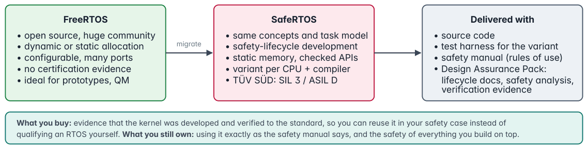
Typical design choices of a safety RTOS
- Static, application-provided memory. Task control blocks, stacks and queue storage are supplied by the application, so memory use is fixed and visible at build time.
- Defensive APIs. Every call validates its parameters and returns an explicit error code; the application is expected to check every return value — a rule your coding guidelines and reviews must enforce.
- Self-checking kernel. Internal data structures, stack limits and task states are checked, and violations go to a defined error hook where the application moves the system to a safe state.
- Spatial isolation. MPU-enabled variants confine each task to its own memory regions — part of the freedom-from-interference argument (Chapter 14).
- Fixed configuration. A reduced, verified feature set; objects are typically created during initialisation, not at run time.
- Per-target verification. Each variant is built and verified for a specific processor, compiler and compiler options. Changing the compiler version or options can invalidate the evidence — a configuration-management point managers should know.
"We use a certified RTOS, so our software is safe" is a common misunderstanding. The certificate covers the kernel as a safety element out of context (SEooC), under stated assumptions of use. Your tasks, drivers, configuration, priorities, stack sizes and timing analysis are all part of your safety case. An ASIL D kernel running unanalysed code with an overflowing stack is not an ASIL D system.
"An RTOS is a small scheduling kernel linked into one application. It runs the highest-priority ready task immediately, keeps interrupts short by deferring work to tasks, uses static memory, and is simple enough that we can calculate worst-case response times. Linux gives us features and ecosystem; the RTOS gives us guaranteed timing. SafeRTOS keeps the FreeRTOS programming model but comes with TÜV certification to ASIL D and a design assurance pack, so we can reuse that evidence in our safety case — as long as we follow its safety manual and do our own analysis on top."
8GPUs, DSPs and NPUs compared
Three different answers to "how do we do the same thing to millions of pixels?". A CPU spends most of its transistors on making one thread fast: caches, prediction, reordering. A GPU makes the opposite bet. It assumes there are thousands of independent pieces of work — pixels, vertices, neurons — and spends its transistors on arithmetic units instead. It does not try to avoid waiting for memory; it simply switches to other work while it waits.
8.1How a GPU is built
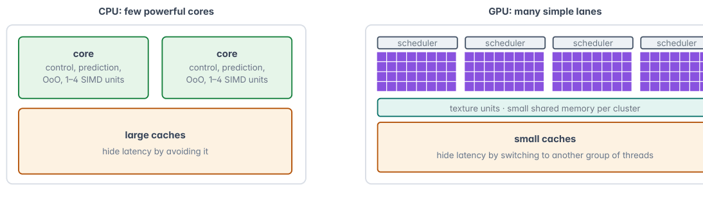
GPU programs (shaders or kernels) are written as if for one pixel or element. The hardware launches thousands of copies and groups them — typically 32 or 64 at a time into a warp or wavefront — that execute the same instruction together on different data. This is called SIMT (single instruction, multiple threads). It feels like scalar programming but is SIMD underneath, which has two consequences. Divergence: if threads in one group take different branches, the group executes both paths one after the other with half the lanes idle. Coalescing: if neighbouring threads read neighbouring addresses, the hardware merges their loads into a few wide memory transactions; scattered reads are much slower.
8.2The graphics pipeline and surround view
GPUs were built for 3D graphics, and surround view is a 3D graphics problem. The car is placed inside a virtual bowl (flat near the vehicle, curving up further away). Every point on the bowl knows which camera sees it and where in that camera's fisheye image — this mapping comes from camera calibration (intrinsics plus extrinsics) and is precomputed once into a mesh. Each frame, the GPU draws the bowl from the virtual viewpoint the driver selected, and for every screen pixel samples the camera images as textures.
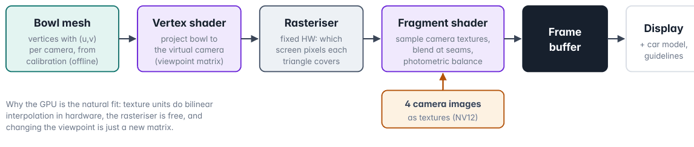
Mobile and automotive GPUs (Imagination PowerVR, Arm Mali, Qualcomm Adreno) are tile-based: they split the screen into small tiles, process all triangles for one tile in on-chip memory, and write each finished tile to DDR only once. This saves a large amount of memory bandwidth compared with desktop GPUs that read and write the frame buffer repeatedly — Chapter 4 again.
8.3GPU compute
Beyond graphics, GPUs run general computations through APIs such as OpenCL, Vulkan compute, or CUDA on NVIDIA. On NVIDIA DRIVE/Orin platforms the GPU, together with dedicated deep-learning accelerators, is the main perception engine and is programmed via CUDA and TensorRT. On TI, Renesas and many NXP chips, the GPU is smaller and mainly used for rendering; perception runs on DSPs and NPUs because they are more power-efficient and more deterministic for that job.
8.4DSP and NPU in one paragraph each
A DSP (digital signal processor) is a processor optimised for streaming arithmetic. Modern vision DSPs combine wide SIMD vectors (512 bits on the TI C7x, 1024 or more on some others) with VLIW issue — the compiler packs many operations into each cycle — and on-chip SRAM fed by DMA. It is fully programmable in C, runs a small RTOS, and its timing is very repeatable. Chapter 12 looks inside one.
An NPU (neural processing unit), also called DLA or MMA, is a hardware array of multiply-accumulate units for the operations that dominate neural networks: convolutions and matrix multiplications on 8- or 16-bit integers. It is not programmed instruction by instruction; a vendor tool (TIDL, TensorRT, eIQ, SNPE…) compiles a trained network into a schedule of layers, quantises it, and plans how weights and feature maps move through on-chip memory.
8.5Which engine for which job?
| CPU (with NEON) | GPU | Vector DSP | NPU | Fixed HW | |
|---|---|---|---|---|---|
| Best at | Branchy logic, small irregular data, control | Rendering, texture sampling, large regular parallel work | Classic CV, filters, pre/post-processing, custom kernels | Convolutions and matrix multiplies | One fixed function at line rate |
| Programming | C/C++, intrinsics | Shaders, OpenCL, CUDA | C with intrinsics, vendor libraries | Model compiler, not hand-coded | Configuration registers |
| Determinism | Medium (caches, OoO) | Low–medium (driver, scheduling) | High | High per layer | Very high |
| Efficiency | Lowest | Medium | High | Very high | Highest |
| Safety story | Well established | Hard (closed drivers) | Good | Emerging (ISO/PAS 8800) | Good, with HW safety mechanisms |
The best pipelines use each engine for what it is good at and avoid moving data between engines more often than necessary. Every hand-over costs a trip through memory, synchronisation and latency. A kernel that is 2× slower on the DSP may still be the right choice if it avoids a round-trip to the GPU.
"A GPU runs the same small program on thousands of pixels in parallel and hides memory latency by switching between them. That is ideal for rendering the 3D surround view, where it samples the camera images as textures. For perception we mainly use the DSP and the neural accelerator, because they deliver more operations per watt and their timing is more predictable — which matters for the safety case."
9Arm versus x86
Why your laptop and your ECU speak different machine languages — and what that changes for your code. Algorithms are usually developed on x86 PCs and deployed on Arm-based SoCs. Most of the time the C++ just recompiles. The differences that remain are few but nasty, and they are exactly the ones that appear late in a project: different SIMD instructions, a weaker memory-ordering model, different char signedness, and floating-point results that differ in the last bit.
9.1Two instruction set families
x86-64 (Intel, AMD) descends from a 1978 design. It is a CISC instruction set: instructions have variable length (1 to 15 bytes) and can combine a memory access with arithmetic. AArch64 (Arm v8/v9) is a RISC design: every instruction is 32 bits long, arithmetic works only on registers, and memory is accessed only through explicit load and store instructions. It also has more general registers (31 versus 16).
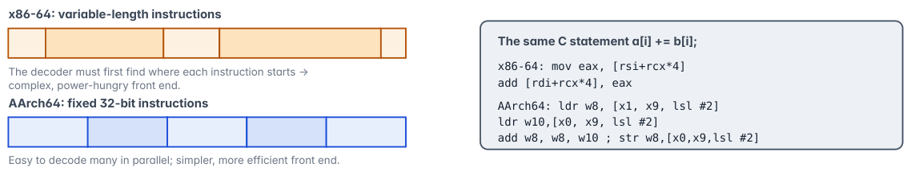
9.2Why automotive SoCs are Arm-based
The decisive difference is the business model, not the instruction set. Intel and AMD sell finished chips. Arm licenses designs: a chip company buys the right to use a Cortex core (or, with an architecture licence, to design its own Arm-compatible core) and combines it with its own ISP, DSP, NPU, safety island and interfaces on one SoC. That is exactly what a vision SoC is. Arm also offers automotive-specific cores (the "AE" series with split-lock safety modes, and Cortex-R for real-time), safety documentation packages for ISO 26262, and a broad ecosystem of RTOSes and compilers. Combined with good performance per watt, this has made Arm the default in ADAS and cockpit chips. RISC-V, an open instruction set without licence fees, is now appearing in automotive microcontrollers and as helper cores inside SoCs, and is worth watching.
9.3The memory-ordering trap
When several cores share memory, the question is: in what order do other cores see my writes? x86 uses a strong model (TSO, total store order): writes from one core appear to others in program order. Arm uses a weakly ordered model: the hardware may make writes visible to other cores in a different order, and may perform reads early, unless the program uses barriers or acquire/release atomics. Code with a hand-made synchronisation flag that "always worked" on x86 can fail on Arm — rarely, under load, in the vehicle.
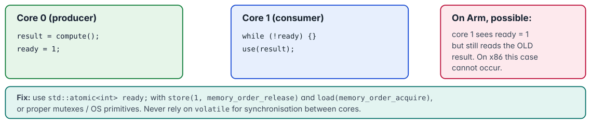
9.4SIMD: SSE/AVX versus NEON/SVE
Both families have SIMD extensions, but they are not source-compatible. x86 has SSE (128-bit), AVX/AVX2 (256-bit) and AVX-512 (512-bit). Arm has NEON (128-bit, also called Advanced SIMD — present in every Cortex-A core) and, from Armv9, SVE2, whose vector length is chosen by the hardware (128–2048 bits) and written as length-agnostic code. Intrinsics written for one do not compile for the other. Translation layers (sse2neon, SIMDe) and portable libraries (Google Highway, xsimd, OpenCV universal intrinsics) help, but the best performance usually comes from code that exploits each instruction set's strengths — for example NEON's interleaved loads, shown in Chapter 11.
9.5Porting checklist
| Issue | What happens | What to do |
|---|---|---|
char signedness | Plain char is signed on x86 but unsigned on Arm Linux. Comparisons like c < 0 silently change. | Use int8_t / uint8_t for data; compile with -fsigned-char only as a stopgap. |
| Memory ordering | Lock-free code that relied on x86 TSO races on Arm. | C++ atomics with explicit ordering; ThreadSanitizer on host; stress tests on target. |
| SIMD intrinsics | SSE/AVX code does not compile for Arm. | Keep a scalar reference path; write NEON versions; consider portable SIMD libraries. |
| Floating point | Arm compilers fuse multiply-add (FMA) more readily; results differ in the last bits from x86. | Compare with tolerances, not bit-exact, unless fixed-point. Control -ffp- contract. |
| Unaligned access | Allowed on normal memory for AArch64, but faults on device memory and can be slow across cache lines. | Align buffers to 64 bytes; use memcpy for unaligned scalars. |
| Sizes | long double is 128-bit on AArch64 Linux, 80-bit on x86. long is 32-bit on Windows, 64-bit on Linux. | Use fixed-width types (int32_t, int64_t). |
| Performance profile | Smaller caches, lower clock, shared bandwidth on target. | Profile on target early; never extrapolate from a PC. |
"It runs at 30 fps on my PC" is not a performance estimate. A desktop core may be 3–6× faster per core than a Cortex-A72, and the PC version probably uses AVX2 and a much larger cache. Insist on an on-target measurement — or at least on a cycle-accurate estimate — before committing to a feature list.
"Arm dominates automotive because chip vendors can license Arm cores and combine them with their own ISP, DSP and safety blocks on one die — x86 vendors sell finished chips. For our software the main porting effort is in three places: SIMD code, which must be rewritten from SSE/AVX to NEON; multithreaded code, because Arm's memory model is weaker; and verification, because floating-point results can differ in the last bit between platforms."
10SIMD and Arm NEON
One instruction, sixteen pixels. Images are the perfect workload for SIMD — Single Instruction, Multiple Data. The same operation is applied to millions of neighbouring pixels, and each pixel is small (8, 10, 12 or 16 bits). A SIMD register holds many pixels side by side, and one instruction operates on all of them at once. NEON is the SIMD unit present in every Arm Cortex-A core; understanding it is also the key to understanding DSPs, which take the same idea much further.
10.1The idea in one picture
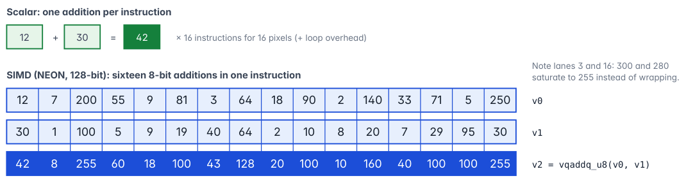
10.2NEON registers and data types
AArch64 NEON has 32 vector registers, v0 – v31, each 128 bits wide. The same register can be viewed as 16 bytes, 8 halfwords, 4 words or 2 doublewords; the instruction decides how to interpret it. In C, intrinsic types make the view explicit: uint8x16_t is sixteen unsigned 8-bit lanes, int16x8_t eight signed 16-bit lanes, float32x4_t four floats. 64-bit "half" types (uint8x8_t) exist for operations that widen or narrow. Array types such as uint8x16x3_t hold three registers — for example the R, G and B planes after a deinterleaving load.
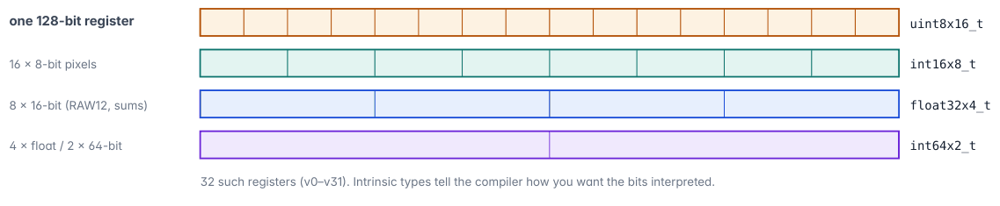
10.3The operations that matter for images
Most of NEON's power for image processing comes from a handful of operation families that do in one instruction what would take several in scalar code.
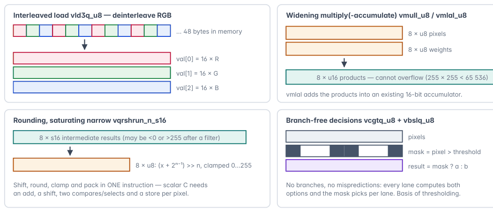
| Family | Example intrinsics | Typical vision / ISP use |
|---|---|---|
| Structured load/store | vld2q_u8, vld3q_u8, vst4q_u8 | RGB↔planar, UYVY/NV12 chroma split, Bayer channel separation |
| Widen / narrow | vmovl_u8, vmull_u8, vqmovn_u16, vqrshrun_n_s16 | Filters and colour conversion with 16/32-bit intermediates, then back to 8-bit |
| Saturating arithmetic | vqaddq_u8, vqsubq_s16 | Brightness, blending, gain without wrap-around artefacts |
| Multiply-accumulate | vmlal_u8, vfmaq_f32, vdotq_s32 | Convolutions, colour matrices; SDOT/UDOT (Armv8.2+) accelerate int8 DNN layers |
| Min / max / abs-diff | vmaxq_u8, vabdq_u8, vabal_u8 | Morphology, SAD for block matching and stereo, clamping |
| Compare and select | vcgtq_u8, vbslq_u8 | Thresholds, masks, branch-free logic |
| Table lookup | vqtbl1q_u8, vqtbl4q_u8 | Small LUTs (gamma segments), byte shuffles, pattern permutes |
| Pairwise / across | vpaddlq_u8, vaddvq_u32 | Downscaling by 2, sums for histograms, statistics, reductions |
| Extract / zip | vextq_u8, vzip1q_u8, vtrn1q_u16 | Neighbouring pixels for filters (x−1, x+1), transposes |
Reading an intrinsic name
10.4Fixed-point arithmetic: why vision and ISP code avoid floats
Floating point is convenient, but integers are cheaper: an 8-bit lane does 16 operations per NEON instruction, a 32-bit float only 4; integer results are also bit-exact across platforms, which makes regression testing against a reference model trivial. Hardware ISPs are entirely fixed-point for the same reasons. In fixed point, a fractional coefficient is stored as an integer with an implied scale. Q8 means "divide by 256": 0.299 becomes 77, 0.587 becomes 150. You multiply in a wider type, add a rounding constant of half the scale, and shift right. The three classic bugs are overflow of the intermediate (choose the width from the worst case), missing rounding (a systematic bias of half a step that shifts mean brightness), and sign handling on right shifts of negative numbers. SIMD saturating and rounding instructions exist exactly to make these steps cheap and correct.
One 128-bit NEON instruction processes 16 × 8-bit, 8 × 16-bit or 4 × 32-bit values. A Cortex-A72 can issue two NEON operations per cycle, so at 2 GHz it peaks around 64 billion 8-bit operations per second per core — if, and only if, the data arrives fast enough. A 512-bit C7x vector does 64 × 8-bit lanes per operation, which is one reason the DSP exists.
10.5SVE2: the next step on Arm
Armv9 cores (for example Cortex-A720AE used in newer automotive SoCs) add SVE2. Code is written without a fixed vector length: a loop asks the hardware how many lanes it has, and predicate registers switch off the lanes beyond the end of the data, which removes separate tail loops. Today most implementations still have 128-bit vectors, so the immediate gain over NEON is mainly in richer instructions and cleaner code; the long-term benefit is that the same binary scales to wider hardware. NEON remains available alongside it.
"NEON is the SIMD engine in every Arm application core. It processes sixteen 8-bit pixels per instruction and has special instructions for exactly what image code needs: splitting RGB into planes while loading, widening multiplies so sums do not overflow, and rounding-saturating conversions back to 8 bits. We use fixed-point arithmetic so results are fast and bit-exact against our reference."
11Intrinsics: why they are faster
A worked example, with real compiler output and measured numbers. An intrinsic is a function that looks like ordinary C but that the compiler replaces with one specific machine instruction. vaddq_u8(a, b) becomes the single instruction add v2.16b, v0.16b, v1.16b. You get the control of assembly — you choose the instructions — while the compiler still does the tedious parts: register allocation, instruction scheduling, function inlining and calling conventions.
11.1The ladder of control
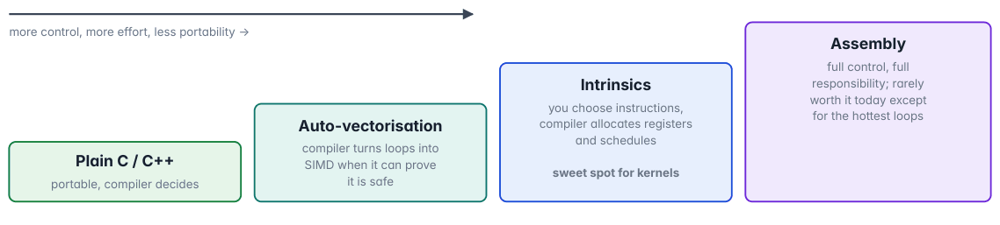
11.2The example: RGB to grey (luma)
Converting an interleaved RGB image to an 8-bit luma image is a good teaching kernel: every pixel needs three loads, three multiplies, additions, rounding and a store, and the pixels arrive interleaved as R,G,B,R,G,B… We use the common BT.601-style weights in Q8 fixed point: Y = (77·R + 150·G + 29·B + 128) >> 8. The weights add up to 256, so the result always fits in 8 bits.
// Scalar reference: one pixel per iteration
void gray_scalar(const uint8_t *restrict rgb, uint8_t *restrict y, int n)
{
for (int i = 0; i < n; i++) {
uint32_t r = rgb[3*i], g = rgb[3*i+1], b = rgb[3*i+2];
y[i] = (uint8_t)((77*r + 150*g + 29*b + 128) >> 8);
}
}// NEON intrinsics: 16 pixels per iteration
#include <arm_neon.h>
void gray_neon(const uint8_t *restrict rgb, uint8_t *restrict y, int n)
{
const uint8x8_t kR = vdup_n_u8(77), kG = vdup_n_u8(150), kB = vdup_n_u8(29);
int i = 0;
for (; i + 16 <= n; i += 16) {
uint8x16x3_t px = vld3q_u8(rgb + 3*i); // load 48 bytes, split into R, G, B
uint16x8_t lo = vmull_u8(vget_low_u8(px.val[0]), kR); // R*77 (8 lanes, 16-bit)
lo = vmlal_u8(lo, vget_low_u8(px.val[1]), kG); // + G*150
lo = vmlal_u8(lo, vget_low_u8(px.val[2]), kB); // + B*29
uint16x8_t hi = vmull_u8(vget_high_u8(px.val[0]), kR); // same for upper 8 pixels
hi = vmlal_u8(hi, vget_high_u8(px.val[1]), kG);
hi = vmlal_u8(hi, vget_high_u8(px.val[2]), kB);
vst1q_u8(y + i, vcombine_u8(vrshrn_n_u16(lo, 8), // (x+128)>>8, narrow to 8 bit
vrshrn_n_u16(hi, 8))); // store 16 grey pixels
}
for (; i < n; i++) { /* scalar tail for the last n % 16 pixels (same as reference) */ }
}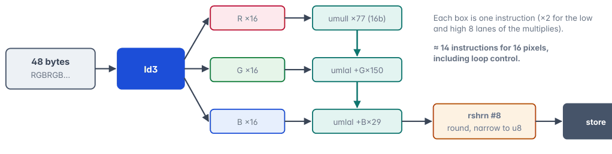
What the compiler actually produced
Compiling the intrinsic version for AArch64 (clang 18, -O2) gives the inner loop below. Every intrinsic became one instruction; the compiler chose umull2/umlal2 to work directly on the upper halves and replaced the rounding narrow with the equivalent raddhn. Compare it with the scalar tail loop the same compiler produced, which needs about 13 instructions per pixel.
// NEON inner loop: 16 pixels
.LBB1_3:
ld3 {v16.16b,v17.16b,v18.16b},[x11],#48
add x12, x9, #32
add x13, x9, #16
cmp x12, x10
umull v7.8h, v17.8b, v2.8b
umull2 v19.8h, v17.16b, v3.16b
umlal v7.8h, v16.8b, v1.8b
umlal2 v19.8h, v16.16b, v0.16b
umlal v7.8h, v18.8b, v5.8b
umlal2 v19.8h, v18.16b, v4.16b
raddhn v7.8b, v7.8h, v6.8h
raddhn2 v7.16b, v19.8h, v6.8h
str q7, [x1, x9]
mov x9, x13
b.ls .LBB1_3// Scalar loop: 1 pixel
.LBB1_6:
add x13, x0, w8, uxtw
add x8, x8, #3
ldrb w14, [x13, #1]
ldrb w15, [x13]
ldrb w13, [x13, #2]
mul w14, w14, w11
madd w14, w15, w10, w14
madd w13, w13, w12, w14
add w13, w13, #128
lsr w13, w13, #8
strb w13, [x1, x9]
add x9, x9, #1
cmp w9, w2
b.lt .LBB1_6Compiler output, AArch64, clang 18.1 -O2 -fno-tree-vectorize. 15 instructions per 16 pixels versus 14 per pixel: about 15× fewer instructions.
11.3Why it is faster — the five reasons
- Lanes. One instruction does 8 or 16 operations instead of one.
- Fused special operations.
vld3deinterleaves while loading;vmlalmultiplies, widens and accumulates;vrshrnadds the rounding constant, shifts and narrows. Each replaces several scalar instructions. - Less loop overhead. The counter, compare and branch run once per 16 pixels instead of once per pixel.
- Wider, fewer memory accesses. One 48-byte load and one 16-byte store replace 48 byte-loads and 16 byte-stores — less pressure on the load/store units and cache ports.
- No hidden type promotion. C promotes every
uint8_ttointfor arithmetic. Intrinsics let you keep data at exactly the width you need (8 → 16 → 8 bits), so more lanes fit in each register.
11.4Measured: and an honest surprise
Because the measurement machine for this chapter is an x86 server, the same kernel was also written with x86 SSSE3 intrinsics (the closest 128-bit equivalent of NEON) and timed on a 1920 × 1280 image. The SIMD version is bit-exact with the scalar reference.
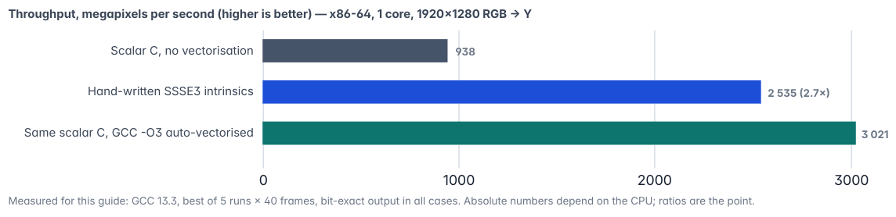
Two lessons come out of this. First, on x86 the speedup is "only" 2.7× because SSE has no deinterleaving load: separating R, G and B costs nine shuffle instructions per 16 pixels that NEON's vld3 gets for free. Instruction sets really do differ in what they are good at. Second, modern compilers vectorise simple loops well. Clang targeting AArch64 auto-vectorises the scalar reference into exactly the same ld3 / umull / umlal / raddhn sequence shown above. So the first step is always to check what the compiler already did (- fopt-info-vec-missed on GCC, -Rpass-missed=loop-vectorize on clang, or simply reading the assembly in Compiler Explorer).
Write intrinsics when the compiler cannot, or will not, vectorise well: pointers that may alias, loops with data-dependent control flow, saturating and rounding fixed-point maths that must match an ISP model bit for bit, lookup tables, horizontal neighbourhoods (filters needing vext), reductions, unusual pixel formats, or when you need guaranteed performance that does not change with the next compiler release. For a simple per-pixel formula, write clean C with restrict and check the output first.
11.5Compute-bound or memory-bound? The roofline view
Once a kernel is vectorised it often stops being limited by arithmetic and starts waiting for memory. A simple model, the roofline, makes this visible. Divide the number of operations by the number of bytes moved to and from DRAM — the arithmetic intensity. If it is low, performance is capped by bandwidth no matter how many lanes you have; if it is high, the compute peak is the limit.
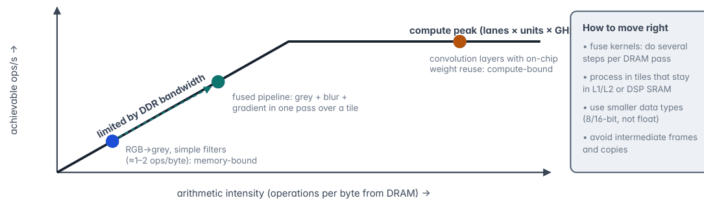
11.6Working practice and pitfalls
- Write and freeze a clean scalar reference.
- Profile on target; vectorise only the hot spots.
- Check auto-vectorisation reports first.
- Write the intrinsic version next to the reference; keep both.
- Test bit-exactness on random images plus edge cases: all 0, all 255, odd widths, widths not divisible by 16, strides larger than width.
- Measure again on target with realistic image sizes and system load.
- Tails: width not a multiple of the vector length; reading past the end of a buffer.
- Overflow in 16-bit intermediates of filters with large coefficients.
- Rounding: truncating shift vs rounding shift — a brightness bias of half a level.
- Signedness: mixing signed and unsigned lanes, especially after subtraction.
- Alignment and stride: assuming rows are contiguous when the buffer has padding.
- MISRA C / coding rules: intrinsics, vector types and casts usually need documented deviations in safety projects — plan for it.
Before writing your own, check optimised libraries: Arm KleidiCV and the Compute Library for Arm, OpenCV with its NEON-optimised HAL, and the vendor libraries for DSPs (TI VXLIB, MMALIB, and the kernels used by TIOVX). They are tested, and often already as fast as a hand-written version.
"Intrinsics are C functions that map one-to-one to SIMD instructions. They are faster because one instruction processes 16 pixels, and because the instruction set has fused operations for image work — deinterleaving loads, widening multiply-accumulate, rounding-saturating narrowing. In our example, the instruction count dropped about fifteen-fold. But compilers now auto-vectorise simple loops well, so we use intrinsics selectively, for the hot kernels the compiler cannot handle, and we always verify them bit-exact against a scalar reference."
12Inside the TI C7x DSP and the Jacinto platform
How a DSP turns the lessons of the previous chapters into hardware. The C7x is the vector DSP at the heart of TI's Jacinto 7 automotive processors (TDA4x) and their industrial siblings (AM6xA). Almost every design choice in it answers a problem we met earlier: the cost of out-of-order hardware (Chapter 3), the memory wall (Chapter 4), and the need for wide SIMD with fused operations (Chapters 10 and 11). Understanding it explains why code written for it looks different — and why, when written well, it is remarkably fast and predictable.
12.1The Jacinto 7 family at a glance
| Device | Application CPUs | DSP / deep learning | Typical use |
|---|---|---|---|
| TDA4VM | 2× Cortex-A72 @ 2 GHz | 1× C7x @ 1 GHz + MMA (8 TOPS), 2× C66x | Surround view, park assist, front camera, 4–8 cameras |
| TDA4VE / TDA4AL / TDA4VL | 2× A72 | C7x + MMA, scaled variants | Cost-optimised L2 ADAS, parking |
| TDA4VH / TDA4AH | 8× A72 | 4× C7x + MMA (32 TOPS) | Higher-end ADAS, up to 12+ cameras |
| All of them | Several Cortex-R5F cores (incl. a lockstep MCU island), VPAC (ISP, LDC, MSC, NF), DMPAC on most variants, GPU, CSI-2, video codec, DSS, functional-safety features up to ASIL D in the MCU domain |
The successor family, TDA5, was announced at CES 2026 with Armv9 Cortex-A720AE cores, Cortex-R52+ real-time cores and TI's next-generation C7 NPU, scaling to hundreds of TOPS per device; TI expects first samples by the end of 2026. Check TI's product pages for current figures.
12.2VLIW: let the compiler do the scheduling
An out-of-order CPU discovers parallelism at run time, with expensive hardware. A VLIW (very long instruction word) processor moves that job to the compiler. The compiler analyses the loop, decides which operations can run in the same cycle, and packs them into an execute packet; the hardware simply issues the whole packet to its functional units. The C71x core has 12 functional units split into a 64-bit scalar side and a 512-bit vector side, and its front end can deliver up to 16 instruction slots per cycle.
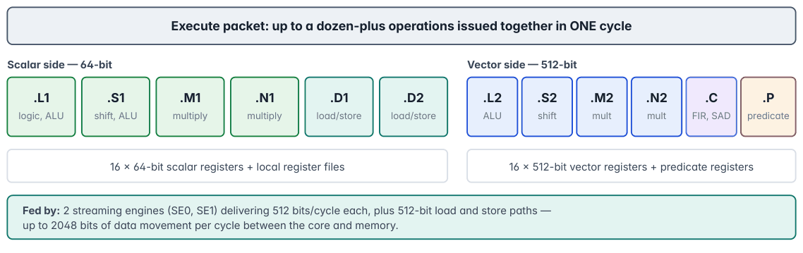
The consequences are worth stating plainly. Timing is static: a loop that the compiler scheduled at a given number of cycles per iteration runs at that speed every time, as long as its data is in local memory — excellent for real-time and safety arguments. Performance depends on the compiler seeing parallelism: dependencies, aliasing pointers, function calls or complex control flow inside a loop prevent the packing and can make the code many times slower. And the hardware is efficient: no reorder buffers, no speculation, no register renaming — the area goes into vector arithmetic instead.
12.3512-bit vectors and C7x data types
A C7x vector register holds 512 bits: 64 × 8-bit, 32 × 16-bit, 16 × 32-bit or 8 × 64-bit lanes — four times a NEON register. The TI compiler exposes them as OpenCL-style vector types: uchar64, short32, int16, float16, with element access (v.s[3], .lo, .hi), ordinary operators (a + b, a * b) that map to vector instructions, and conversion functions. Intrinsics prefixed with __ expose the special instructions.
In C7x code, float16 means a vector of sixteen 32-bit floats, not a 16-bit half-precision float as in other ecosystems. Similarly int16 is sixteen int s. Name your variables clearly and read type names carefully when porting code or reviewing it.
12.4The streaming engine: loads without load instructions
In the NEON example of Chapter 11, a quarter of the loop's instructions were address arithmetic, loads and stores. The C7x removes them from the loop body. A streaming engine (SE) is a hardware unit that you program once, before the loop, with a template describing a multidimensional access pattern — element type, vector length, and up to six nested loop counts and strides (ICNT0…ICNT5, DIM1…DIM5). From then on it fetches data ahead of time from L2 (and, through it, from MSMC or DDR) and presents the next full vector in a special register every time the code asks for it. There are two streaming engines, each delivering 512 bits per cycle.
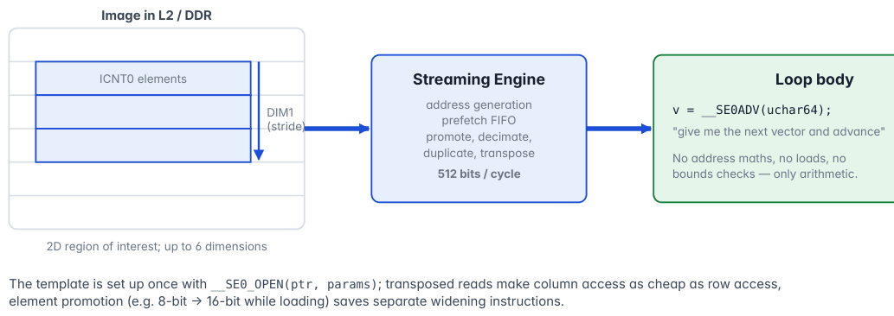
For the output side, and for irregular or additional input patterns, the C7x has streaming address generators (SA). They do not move data themselves; they compute the next address of a multidimensional pattern, and they also produce predicates — masks that switch off lanes beyond the edge of the image. A store through an SA therefore needs no separate tail loop: the last, partial vector of each row is written with the extra lanes masked. The template idea is the same as for the streaming engine.
12.5Software pipelining: overlapping loop iterations
Even with streaming, one iteration of a loop has a chain of dependent steps: load, multiply, add, shift, store, each with a latency of a few cycles. Executed one after the other, most functional units would idle. The C7x compiler applies software pipelining (modulo scheduling): it starts a new iteration every few cycles while earlier iterations are still in progress, exactly like the hardware pipeline of Chapter 3 but arranged by the compiler. The interval between iteration starts is the initiation interval (ii). The compiler reports it in its assembly output, and it is the single most useful number for C7x optimisation.
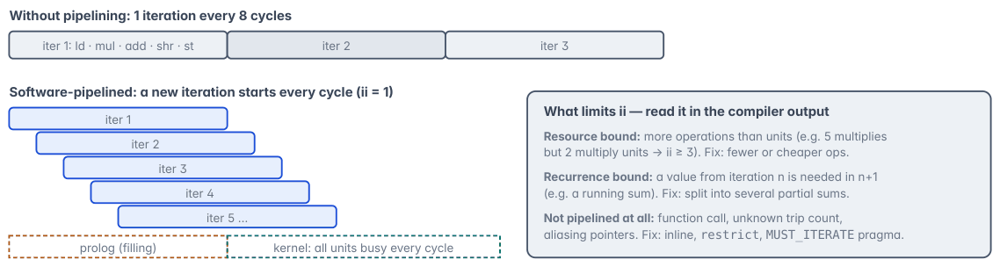
A blend kernel on 8-bit images, pipelined at ii = 1 with 64-lane vectors, produces 64 pixels per cycle — at 1 GHz that is 64 gigapixels per second of raw compute. A full 2 MP frame then needs about 32 000 cycles, or 32 µs. In practice the data movement, not the arithmetic, sets the limit — which is why the streaming engine and DMA matter as much as the vector units.
12.6An example: blending two camera images
Surround view blends neighbouring cameras in the overlap zones: out = (w·A + (256−w)·B + 128) >> 8. The sketch below shows the structure of a C7x implementation with two streaming engines reading the two images and an address generator writing the output. It is simplified for teaching; names follow TI's c7x.h conventions, but check the C7000 compiler documentation and TI's examples for exact template fields and intrinsic signatures.
// C7x sketch: weighted blend of two 8-bit images (structure, not production code)
#include <c7x.h>
void blend_c7x(const uint8_t *a, const uint8_t *b, uint8_t *out,
int width, int height, int stride, uint8_t w)
{
// 1. Describe the 2D access pattern once: width elements per row, height rows, row stride
__SE_TEMPLATE_v1 se = __gen_SE_TEMPLATE_v1();
se.ELETYPE = __SE_ELETYPE_8BIT; se.VECLEN = __SE_VECLEN_64ELEMS;
se.DIMFMT = __SE_DIMFMT_2D; se.ICNT0 = width; se.ICNT1 = height; se.DIM1 = stride;
__SE0_OPEN(a, se); __SE1_OPEN(b, se); // two input streams, same shape
__SA_TEMPLATE_v1 sa = __gen_SA_TEMPLATE_v1(); // output addresses + edge predicates
sa.VECLEN = __SA_VECLEN_64ELEMS; sa.DIMFMT = __SA_DIMFMT_2D;
sa.ICNT0 = width; sa.ICNT1 = height; sa.DIM1 = stride;
__SA0_OPEN(sa);
const ushort32 wa = (ushort32)w, wb = (ushort32)(256 - w), rnd = (ushort32)128;
int nvec = ((width + 63) / 64) * height;
#pragma MUST_ITERATE(1, , ) // tell the compiler the trip count is >= 1
for (int i = 0; i < nvec; i++) {
uchar64 va = __SE0ADV(uchar64); // next 64 pixels of A, no load instruction
uchar64 vb = __SE1ADV(uchar64); // next 64 pixels of B
// widen to 16 bit, multiply-accumulate, round, narrow (each half: 32 lanes)
ushort32 lo = __convert_ushort32(va.lo) * wa + __convert_ushort32(vb.lo) * wb + rnd;
ushort32 hi = __convert_ushort32(va.hi) * wa + __convert_ushort32(vb.hi) * wb + rnd;
uchar64 res = pack_hi_bytes(lo, hi); // placeholder: take bits 15..8 of each lane
__vpred p = __SA0_VPRED(uchar64); // lanes inside the row are enabled
__vstore_pred(p, __SA0ADV(uchar64, out), res); // masked store, advance the pattern
}
__SE0_CLOSE(); __SE1_CLOSE(); __SA0_CLOSE();
}Reading guide: everything above the loop is set-up; the loop body contains only two stream reads, the arithmetic, and one predicated store. That is what lets the compiler reach a low ii. The packing step is a placeholder for the appropriate C7x narrowing/pack instruction.
Compare this with the NEON version in Chapter 11. The arithmetic idea is identical — widen, multiply-accumulate, round, narrow. What changed is that the vector is 4× wider, address maths and loads have moved into the streaming engines, edge handling has moved into predicates, and the scheduling of many overlapping iterations is done by the compiler.
12.7Memory on the C7x: SRAM, caches and DMA
The C7x has small L1 program and data memories and a larger L2 (512 KB on the TDA4VM C7x) that can be configured partly as cache and partly as directly addressed SRAM. Behind it sits the shared on-chip MSMC SRAM (up to 8 MB on TDA4VM), then DDR. For performance-critical work the standard pattern is to keep working data in L2 SRAM and move it with DMA in a ping-pong scheme, so that the DSP never waits for DDR.
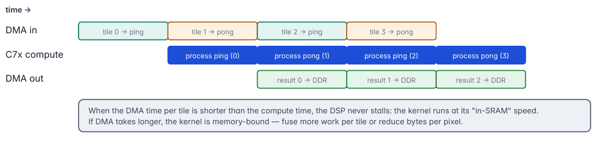
12.8The MMA: a matrix engine next to the vector core
Neural networks are dominated by matrix multiplication. The Matrix Multiply Accelerator (MMA) is tightly coupled to the C7x and computes a 64 × 64 block of 8-bit multiply-accumulates every cycle: one 64-element input vector times a 64 × 64 weight matrix. That is 4096 MACs, or 8192 operations, per cycle — at 1 GHz exactly the 8 TOPS quoted for the TDA4VM. The C7x streaming engines feed it feature-map data, the weights are preloaded into its internal buffers, and the vector core handles layers the MMA does not support (some activations, resizing, custom post-processing).
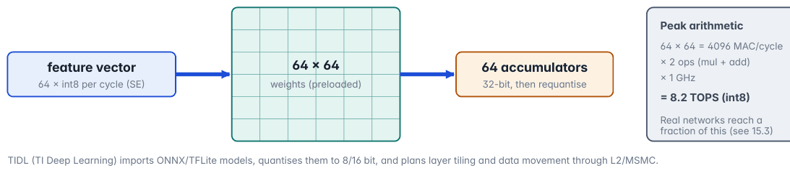
12.9The hardware accelerators around the DSP
A large part of the Jacinto pipeline never touches a programmable core. Two accelerator groups do the fixed, pixel-rate work, configured through drivers and TIOVX nodes:
12.10Software and tools around the C7x
- Processor SDK (Linux / QNX / RTOS) and vision_apps — the reference software stack and demos, including surround view and parking examples.
- TIOVX — TI's implementation of the Khronos OpenVX graph API, extended with targets for every core and accelerator. You describe the pipeline as a graph; the framework handles IPC, buffers and scheduling.
- TIDL — import, quantisation and runtime for deep-learning models on C7x + MMA, with an accuracy/performance analysis flow on PC.
- Kernel libraries — VXLIB, MMALIB, DSPLIB and others: optimised C7x building blocks. Check them before writing a kernel.
- C7000 compiler — read its software-pipelining feedback (
ii, resource and recurrence bounds) in the generated assembly; userestrict,MUST_ITERATEandUNROLLpragmas. - Host emulation — TI provides a C7x host-emulation library so code written with C7x types and intrinsics can be compiled and debugged on a PC, then checked bit-exact against the target.
- Profiling — cycle counters on target, TIOVX performance logs per node, and DDR bandwidth statistics.
| Arm NEON (Cortex-A72) | TI C7x | |
|---|---|---|
| Vector width | 128 bit (16 × u8) | 512 bit (64 × u8) |
| Parallelism found by | Hardware (out-of-order) | Compiler (VLIW, software pipelining) |
| Data supply | Caches + hardware prefetch | Streaming engines, address generators, SRAM + DMA |
| Edge / tail handling | Separate scalar tail loop | Predicated (masked) stores |
| Timing | Variable (caches, OS) | Highly repeatable |
| Best for | Code close to the application, moderate pixel work | Heavy, regular pixel and DNN-adjacent work |
"The C7x is a 512-bit vector DSP. Instead of out-of-order hardware, the compiler packs a dozen operations into each cycle and overlaps loop iterations, so timing is predictable. Streaming engines fetch multidimensional image regions in the background and hand the core one full vector per cycle, so loops contain only arithmetic. Next to it, the MMA does 4096 int8 multiply-accumulates per cycle for neural networks — that is where the 8 TOPS come from. Fixed hardware for ISP, lens correction and scaling does the standard pixel work, so the programmable cores are free for perception."
13The ISP: from raw data to image
What happens between the photodiode and the YUV buffer — and why it matters for perception. An image sensor does not deliver a picture. It delivers a grid of numbers, one per photodiode, each telling how much light passed through a tiny colour filter — linear, noisy, with dark-level offsets, defective pixels, vignetting and, in automotive HDR sensors, a compressed encoding of an enormous brightness range. The Image Signal Processor (ISP) turns this into an image that people and neural networks can use. In a vision SoC the ISP is fixed-function hardware tuned through hundreds of parameters, and its choices directly affect detection performance.
13.1Raw data and the Bayer pattern
Each photodiode measures only brightness. To get colour, the sensor places a colour filter over each pixel, normally in the Bayer pattern: a 2 × 2 tile with one red, one blue and two green filters (green twice because human vision is most sensitive to it). Automotive sensors also use variants such as RCCB or RCCG (clear pixels instead of green, for more sensitivity at night) and RGB-IR (for driver monitoring). Each pixel therefore knows one colour; the other two must be interpolated from neighbours — demosaicing.
Raw values are linear: twice the light gives twice the number (plus noise and an offset). That linearity is valuable — it is the only stage where brightness is physically meaningful — and it is why some perception systems feed raw or lightly processed data directly to networks.
13.2The pipeline, stage by stage
Every ISP has its own order and names, but the core stages are the same. The early stages work on raw Bayer data at high bit depth; after demosaicing the image is RGB, then converted to YUV for output.
13.3HDR: when the scene is brighter than the sensor
A road scene at night with headlights, or a tunnel exit at noon, can span 120 dB or more — a brightness ratio of one million to one. A single exposure of a typical pixel captures perhaps 60–70 dB; an 8-bit display shows about 48 dB. Automotive sensors reach high dynamic range by combining several exposures (long, medium, short), using split pixels of different sensitivity, or dual conversion gain, and merging them into a 20–24-bit linear value per pixel.
That is too much data for the camera link, so the sensor compands it: a piecewise-linear (PWL) curve keeps fine steps for dark values and coarse steps for bright ones, and packs the result into 12 or 16 bits. The ISP's first job is to decompand back to linear; its later tone mapping compresses the range again for output, ideally locally so that both the dark road and the bright sky keep visible detail.
13.43A: the control loop around the ISP
The ISP processes pixels, but someone must decide the exposure time, analogue and digital gain, and white-balance gains for the next frame. That is the job of the 3A algorithms — auto-exposure (AE), auto-white-balance (AWB) and auto-focus (AF, absent in most fixed-focus automotive cameras). They run as software, typically on a real-time core, reading the statistics from the ISP and writing sensor registers over I²C and ISP parameters for the next frames.
13.5Output formats and their cost
The ISP normally writes YUV: one luma (Y) plane carrying brightness and detail, and chroma (U, V) carrying colour, usually at reduced resolution because the eye — and most networks — care less about colour detail. Common layouts:
- NV12 (YUV 4:2:0, semi-planar): full-resolution Y plane followed by one interleaved UV plane at half width and half height. 1.5 bytes per pixel. The standard for DNN input, codecs and GPU textures.
- UYVY / YUYV (YUV 4:2:2, packed): chroma at half width, full height, interleaved with luma. 2 bytes per pixel. Common on camera links and older displays.
- RAW12/RAW16: for recording, offline tuning and raw-domain networks. 1.5–2 bytes per pixel.
13.6Tuning for humans versus tuning for machines
ISP tuning — choosing the noise filter strengths, sharpening, tone curves, colour matrices and AE targets — has traditionally optimised for people looking at a screen: pleasant colours, low visible noise, crisp edges. A neural network has different needs. Strong sharpening creates halos that can look like edges; aggressive noise reduction erases small, distant objects; global tone mapping may crush exactly the shadow detail where a pedestrian stands. Many programmes therefore run two outputs from the same raw data: a viewing stream tuned for the display, and a perception stream tuned for the networks (often less sharpening, more preserved dynamic range, sometimes higher bit depth). Training data must be produced through the same ISP settings as deployment, or the network sees a domain shift.
Changing an ISP parameter late in a project — "just a bit less noise reduction for the display" — silently changes the input of every network trained on the old settings. Treat ISP tuning files as versioned, reviewed artefacts with the same change control as model weights, and re-run perception KPIs after each change. This is also a SOTIF topic (Chapter 14).
13.7Where the ISP runs, and what the engineer controls
- SoC hardware ISP (TI VISS, Renesas, NXP, Qualcomm Spectra, NVIDIA): the most common choice in modern ECUs; supports several cameras, receives raw data over the link, tuned with the vendor's tool (on TI, the tuning tool generates DCC binary files).
- ISP in the camera (a companion ISP chip or a sensor with built-in ISP): the link carries YUV; simpler for the ECU, but less control and harder to change late.
- Software stages on DSP or GPU: for special functions — custom HDR merge, de-hazing, raw-domain processing for networks — at the cost of compute and bandwidth.
Two further links to other chapters: the lens distortion correction after the ISP uses a mesh generated from the camera's intrinsic calibration, so a calibration change (EOL or online) must update the LDC tables; and every stage that writes a frame to DDR costs bandwidth (Chapter 4), which is why ISP, LDC and scaler are chained "on the fly" wherever the hardware allows.
"The sensor delivers linear, noisy Bayer data — one colour per pixel, compressed with a piecewise-linear curve so that 120 dB of HDR fits over the link. The hardware ISP decompands it, removes the black level and defects, corrects shading and white balance, reduces noise, demosaics, applies the colour matrix and tone mapping, and writes YUV. Auto-exposure and white balance run as a control loop on a real-time core using the ISP's statistics. For perception we tune the ISP differently than for the display, and we version the tuning like model weights, because it changes what the network sees."
14Safety, real-time and security in automotive
What makes an automotive vision system different from a fast computer with cameras. Everything in the previous chapters applies to any embedded vision device. What makes automotive special is the set of obligations around it: the system must be shown to be safe when it fails (ISO 26262), safe when it works as designed but meets a situation it does not understand (ISO 21448, SOTIF), secure against attackers (ISO/SAE 21434), on time, and robust from −40 °C to +105 °C or more for fifteen years. These obligations reach down into the choice of SoC, OS, memory layout and even coding style.
14.1Functional safety and ASIL in one page
ISO 26262 deals with hazards caused by malfunctions of electrical and electronic systems. Each hazardous event is rated for severity (S), exposure (E — how often the situation occurs) and controllability (C — whether a normal driver can avoid harm). The combination gives an ASIL from A (lowest) to D (highest), or QM when ordinary quality management is enough. The ASIL then dictates how rigorously the system must be developed and how well hardware faults must be detected.
Two families of failures are distinguished. Systematic failures are design errors — bugs, wrong requirements — and are handled by process: requirements traceability, reviews, testing, coding rules, tool qualification. Random hardware failures — a flipped bit, a dying transistor — are handled by safety mechanisms in hardware and software, and quantified by metrics that state what fraction of possible faults is detected. The SoC vendor provides a safety manual and analyses (FMEDA) describing the chip's mechanisms; the system integrator must use them as described.
Hardware safety mechanisms you will meet
| Mechanism | What it detects |
|---|---|
| ECC on memories and buses | Bit flips in SRAM, caches, DDR and on-chip transfers (Section 4.8) |
| Lockstep cores | Computation errors in a CPU core, cycle by cycle (Section 5.3) |
| LBIST / MBIST | Built-in self-tests of logic and memories at start-up or periodically |
| Watchdogs (window, Q&A) | Hung or runaway software; a Q&A watchdog also checks the answer is computed correctly |
| Clock and voltage monitors | Drifting or failing clocks and supplies |
| Firewalls, MPU/MMU, SMMU | Illegal accesses between software partitions and from bus masters |
| CRC on image data, frame counters | Corrupted, repeated or frozen frames along the camera pipeline |
14.2Freedom from interference: mixing criticalities on one chip
A single SoC almost always runs software of different ASILs: an ASIL B rear-view path next to QM infotainment-like features and an ASIL D monitor. ISO 26262 then requires freedom from interference: a fault in lower-ASIL software must not corrupt higher-ASIL software. Three dimensions must be argued.
14.3SOTIF: safe even when nothing is broken
A perception system can be fault-free and still be wrong: glare from a low sun, a dirty lens, heavy rain, an unusual object, a parking slot painted in a way the network never saw. ISO 21448 (SOTIF — Safety Of The Intended Functionality) addresses these performance limitations and the triggering conditions that expose them. The goal is to move scenarios from "unknown and unsafe" to "known", and from "known unsafe" to "known safe", through analysis, targeted data collection, testing and design changes such as degradation detection ("camera blocked" warnings). For AI components, ISO/PAS 8800 (2024) extends this thinking to data quality, training and validation of machine-learned models.
14.4Latency: the glass-to-glass budget
For a display function, the relevant number is glass-to-glass latency: from photons hitting the lens to light leaving the screen. For a perception function it is sensor-to-actuator or sensor-to-message latency. Both are sums of many stages, and frame-based processing means several frames are "in flight" at any time — the pipeline delivers 30 frames per second, but each individual frame may take three or four frame periods to complete.
14.5Cybersecurity
Since UN Regulations No. 155 and 156 came into force, every new vehicle type in the regulated markets needs a certified cybersecurity and software-update management system, and ISO/SAE 21434 defines the engineering process. At the level of a camera ECU this means: secure boot (every software stage is signature-checked by the previous one, rooted in keys in the HSM or SoC security module), secure updates with rollback protection, authenticated communication on the vehicle network (AUTOSAR SecOC, MACsec on Ethernet), disabled or locked debug ports in production, and protection of calibration and model files against tampering. Security features cost boot time and compute, so they belong in the timing budget from the start.
14.6Process, code and tools
- Automotive SPICE (ASPICE) assesses the development process: traceable requirements (SWE.1), architecture (SWE.2), detailed design and units (SWE.3), unit verification (SWE.4), integration and qualification testing (SWE.5–6). For optimised vision code this means: requirements for timing and accuracy, a documented reference implementation, unit tests comparing optimised kernels bit-exact to the reference, and traceable results.
- Coding guidelines such as MISRA C/C++ restrict risky language features. Intrinsics, vector types, pointer casts and pragmas usually need documented deviations; plan them instead of discovering them at the audit.
- Tool confidence (ISO 26262-8): compilers, code generators and test tools used for safety-relevant software need a tool confidence level and, if needed, qualification. A change of compiler version or optimisation options can matter.
- Static and dynamic analysis: static analysers, stack-usage analysis, WCET measurements, code coverage on target.
14.7The physical environment
Automotive semiconductors are qualified to AEC-Q100 with temperature grades (grade 2: −40 to +105 °C ambient, grade 1: −40 to +125 °C), and must be available for 10–15 years. A camera ECU behind the windscreen or in a mirror housing can heat-soak in summer sun; without a fan, sustained DNN load may hit thermal limits. Consequences for software: a performance budget measured at room temperature on a lab bench is not the budget in the car — keep margin (a common target is 60–70% load at worst-case conditions), measure at temperature, and design graceful degradation (lower frame rate, smaller network) rather than unpredictable throttling.
"Automotive adds four obligations to performance: functional safety — detect hardware faults and avoid design errors according to the ASIL; SOTIF — show that perception is safe even when nothing is broken, across glare, rain and dirt; cybersecurity — secure boot, updates and communication; and robustness over temperature and lifetime. On a shared SoC we must also prove freedom from interference in memory, time and communication. That is why we keep load margins, use certified OS components, protect messages end to end, and verify optimised code against a reference."
15Putting it all together
Performance work, platform decisions and conversations — a toolkit for engineers, leads and managers. This last chapter turns the concepts into practice: a repeatable way to make vision software fast enough, a sober way to read vendor performance claims, a checklist for evaluating a platform, and ready answers to the questions that come up in customer meetings and design reviews.
15.1A performance engineering loop
15.2Which levers give the most
15.3What "TOPS" really means
NPU performance is advertised in TOPS — tera (1012) operations per second. The number is a peak: MAC units × 2 × clock, for 8-bit integers, with every unit busy every cycle. For the TDA4VM MMA that is 4096 × 2 × 1 GHz ≈ 8 TOPS (Chapter 12). Real networks reach a fraction of this because:
- layers with low data reuse (depth-wise convolutions, small feature maps, fully connected layers) are memory-bound, so the MAC array waits for data; layer shapes rarely fit the array exactly (a 48-channel layer on a 64-wide array wastes a quarter); unsupported operators fall back to the DSP or CPU and break the pipeline; pre-processing (resize, normalise) and post-processing (decoding boxes, non-maximum suppression) run elsewhere and are often forgotten in the estimate; other users of DDR bandwidth (ISP, GPU, display) compete with the NPU.
Compare platforms by measured latency and frames per second of your own network (or a close proxy) at your input resolution, with the rest of the pipeline running — plus power and DDR bandwidth used. Two chips with the same TOPS can differ by 2–3× on a real model. Ask vendors for model-specific benchmarks, not peak numbers.
15.4Evaluating a platform: a checklist
| Area | Questions to ask |
|---|---|
| Cameras and ISP | How many camera inputs and at what total MP/s? HDR and companding support, LED flicker handling? RCCB/RGB-IR support? How many ISP channels in parallel? Tuning tools and support? |
| Geometry and scaling | Hardware fisheye/LDC with mesh input? Multi-scale outputs? Can stages chain without DDR round-trips? |
| Deep learning | Measured fps on our networks? Supported operators? Quantisation tools and accuracy loss? Mixed precision (8/16 bit)? |
| Memory | DDR type, width and peak bandwidth? On-chip SRAM size? Bandwidth budget for our pipeline with margin? |
| CPU and GPU | Enough Cortex-A headroom for application, fusion and middleware? GPU sufficient for the 3D view at target resolution and frame rate? |
| Safety | ASIL capability per domain? Safety manual and FMEDA available? Integrated MCU island or external MCU needed? Certified OS options? |
| Software | SDK maturity, release cadence, Linux/QNX support, OpenVX/TIOVX-style frameworks, documentation quality, community and FAE support? |
| Security | Secure boot chain, HSM or security subsystem, key provisioning, debug lock? |
| Physical and commercial | Power at our workload and temperature grade? Package and board complexity? Price, longevity commitment, roadmap and pin-compatible variants? |
15.5For managers: where effort and risk hide
Experience across camera programmes shows recurring patterns. Porting from a PC prototype to the target routinely takes longer than the algorithm development itself, because it touches every layer: OS, drivers, memory layout, fixed-point conversion, SIMD and accelerator offload. Performance problems appear late when the full pipeline first runs together and memory bandwidth, not any single kernel, turns out to be the bottleneck — so an early end-to-end skeleton on target, even with dummy algorithms, is the best risk reduction. Image quality and perception are coupled through ISP tuning, so tuning milestones belong in the perception plan. Safety and security work (analyses, evidence, tool qualification) is substantial and cannot be added at the end. And a load margin of 30–40% at worst-case conditions is not waste; it is what absorbs the next feature request, the next model version and the summer test drive.
"A camera ECU is a pipeline of very different jobs on a chip full of specialists. Fixed hardware does the ISP, lens correction and scaling; a vector DSP and a matrix engine run perception; a GPU renders; Arm cores run the application; a lockstep MCU supervises everything and talks to the car. Real-time operating systems give guaranteed timing where it matters, Linux or QNX give features elsewhere. Moving data costs far more than computing on it, so DDR bandwidth and cache behaviour usually decide performance; SIMD intrinsics and DSP streaming engines exist to keep arithmetic units fed. And on top of performance, automotive demands safety, SOTIF, security and robustness — which shape every one of those choices."
CCheat sheet
The rules of thumb and numbers from the chapter on one page.
| Data movement | Moving a byte from DRAM costs far more energy and time than computing on it; optimise for bytes moved first. |
|---|---|
| Bandwidth budget | Bytes per pixel × pixels × fps × number of readers and writers per stage; keep peak DRAM use well below the theoretical maximum. |
| Memory hierarchy | Registers ~1 cycle, L1 ~4 cycles, L2 ~10–20 cycles, DRAM ~100 ns; SRAM is fast and small, DRAM dense and slow. |
| Cache coherence | Before a DMA engine reads, clean the CPU cache; before the CPU reads DMA output, invalidate it. |
| Engine choice | Fixed-function for fixed jobs (ISP, LDC, scaler), DSP for custom pixel and signal loops, NPU for neural networks, GPU for rendering, CPU for control. |
| MCU and lockstep | A small safety MCU with lockstep cores supervises the SoC, owns vehicle communication and reaches the safe state. |
| Real-time | Real-time means a bounded worst case, not speed; schedulability analysis checks deadlines with worst-case execution times. |
| Arm vs x86 | Arm has a weaker memory order: shared data needs atomics or barriers, not just volatile. |
| SIMD | NEON: 128-bit registers, 16 × 8-bit lanes; widen before multiply, narrow with saturation; fixed-point beats float for pixels. |
| Intrinsics | Worth it only where a profiler shows a compute-bound hot loop; memory-bound loops gain little. |
| Roofline | Arithmetic intensity (operations per byte) decides whether a kernel is limited by compute or by memory. |
| VLIW DSP | The compiler schedules parallel instructions; software pipelining and streaming engines keep the units busy. |
| TOPS | Peak dense INT8 operations; real throughput depends on layer types, memory traffic and compiler support. |
| Glass to glass | Latency adds exposure, readout, ISP, queues, processing, rendering and display scan; processing time alone is a fraction. |
| Rear camera | Image within 2 s of selecting reverse (FMVSS 111), so boot is staged and the camera path starts first. |
QSelf-check questions
Short model answers first, then questions that check understanding with why and what if.
Q.1Core questions
Why not just use a bigger CPU?Common
CPUs spend most of their energy deciding what to do, not computing. For pixel and DNN work, DSPs, NPUs and fixed hardware are 10–100× more efficient — and we have a power and heat budget of a few watts.
Why do you need a DSP if you have an NPU?Common
The NPU only does the dense layers of a network. Pre- and post-processing, unsupported layers and classic vision algorithms still need a programmable vector engine.
What does 8 TOPS mean for us?Common
A theoretical peak. Our network will use a fraction of it; we quote measured fps at our resolution with the full pipeline running.
Can we add another camera?Common
It depends mainly on capture inputs, ISP throughput and DDR bandwidth, then on compute. Each 2 MP camera at 30 fps adds roughly 0.5–1.5 GB/s of traffic through the pipeline.
Why is latency 100 ms if processing takes 20 ms?Common
Exposure, sensor readout, display refresh and buffering are part of the chain. Processing is often the smaller part (Figure 14.4).
Why does porting from PC take so long?Common
Different instruction set and SIMD, much smaller caches, fixed-point, accelerators with their own programming model, real-time OS constraints, and verification that the port gives the same results.
Why intrinsics instead of OpenCV?Common
We use optimised libraries where they exist. Intrinsics are for hot kernels where the library or compiler is not good enough, or where we must match a reference bit-exactly.
Why is there an extra MCU?Common
It boots in milliseconds, owns the vehicle network, wakes and powers the SoC, and independently supervises it for functional safety (Chapter 5).
Why not run everything on Linux?Common
Linux gives features but not certifiable worst-case timing. Timing-critical and safety functions run on an RTOS on dedicated cores (Chapters 6 and 7).
Q.2Why and what if
Why can processing an image column by column be many times slower than row by row?Why
Images are stored row-major, so walking down a column touches a new cache line, and often a new DRAM page, for every pixel and uses only a few bytes of each 64-byte line. Row-wise access uses every byte that was fetched and lets the prefetcher run ahead. Transpose in tiles when column access is unavoidable.
What if the CPU reads a buffer that a DMA engine has just written, without cache maintenance?What if
On a non-coherent system the CPU may read stale lines from its cache that still hold the old content, so the algorithm sees part of the previous frame. Invalidate the cache range after the DMA completes, or use the buffer-sharing API's begin and end access calls, which do it for you.
Why does a power-of-two image stride sometimes slow down a filter?Why
Rows that are a power of two apart map to the same cache sets, so a vertical filter that reads several rows evicts its own data: conflict misses. Padding the stride by one cache line spreads the rows over different sets.
What if a flag shared between two threads is only declared volatile on Arm?What if
volatile stops the compiler from caching the value but does not order memory accesses between cores. Arm may let the flag become visible before the data it guards, so the reader sees the flag set and reads old data. Use std::atomic with release and acquire ordering.
Why does a hard real-time task need its worst case analysed rather than its average measured?Why
A deadline is missed by the slowest run, not the typical one. Caches, interrupts, contention on the interconnect and blocking by lower-priority tasks create rare long runs that a benchmark may never hit. Worst-case execution time and response-time analysis bound them.
What if a low-priority task holds a mutex that a high-priority task needs?What if
The high-priority task blocks, and a medium-priority task can then preempt the low one indefinitely: priority inversion. Priority inheritance or a priority-ceiling protocol raises the holder's priority until it releases the lock.
Why can NEON code with 16 lanes be less than 16 times faster than scalar code?Why
The loop may be memory-bound, so wider arithmetic waits on the same DRAM bandwidth; data must be widened and narrowed between 8-bit and 16-bit lanes; and the compiler may already have vectorised the scalar version. The roofline shows which limit applies before you start.
What if a fixed-point multiply is not shifted back after each step?What if
The fractional bits accumulate, so a Q8 times Q8 product is Q16, and the next operation overflows its integer type or loses precision. Track the format of every intermediate, shift with rounding, and saturate when narrowing.
Why does a camera ECU need a separate safety MCU when the SoC has many Arm cores?Why
The application cores run complex software that cannot be qualified to a high ASIL, and they share failure causes with the rest of the SoC. A lockstep MCU detects its own hardware faults, runs a small certified RTOS and can monitor the SoC and put the system into a safe state independently.
What if two perception networks on the same NPU both meet their timing in isolation but not together?What if
They compete for the NPU, its local memory and the DRAM bandwidth, so each one waits for the other and evicts the other's data. Budget the platform with all workloads running at once, schedule them explicitly, and measure under worst-case load and temperature.
Why does a VLIW DSP depend so heavily on the compiler?Why
The hardware issues a fixed bundle of instructions every cycle and does no dynamic reordering. Finding enough independent work to fill each bundle, including software pipelining of loops, is the compiler's job; restrict-qualified pointers, known trip counts and aligned data let it do so.
What if the ISP output is tuned for the display and also fed to perception?What if
Local tone mapping, sharpening and strong noise reduction make images pleasant for people but change edges and textures between scenes, which can lower network accuracy. Many systems use a second ISP output, or a separate tuning, for machine vision.
GGlossary
- 3A
- auto-exposure, white balance, focus.
- AMP / SMP
- asymmetric (each core its own OS) / symmetric multiprocessing.
- ASIL
- Automotive Safety Integrity Level, A–D.
- AUTOSAR
- standard automotive software architecture (Classic / Adaptive).
- Bayer / CFA
- colour filter mosaic on the sensor.
- Cache line
- 64-byte unit a cache transfers.
- CCM
- colour correction matrix.
- Coherence
- keeping cached copies consistent.
- Companding
- non-linear compression of HDR raw data.
- CSI-2
- MIPI camera serial interface.
- DDR / LPDDR
- external DRAM types.
- DMA
- engine copying data without a CPU.
- DMPAC
- TI depth/motion accelerator (stereo, optical flow).
- E2E
- end-to-end message protection (CRC, counter).
- ECC
- error-correcting code on memory.
- FFI
- freedom from interference.
- HDR
- high dynamic range.
- HSM
- hardware security module.
- ii
- initiation interval of a software-pipelined loop.
- Intrinsic
- C function mapping to one instruction.
- IPC
- inter-processor communication (also: instructions per cycle).
- ISA
- instruction set architecture.
- ISP
- image signal processor.
- LDC
- lens distortion correction.
- Lockstep
- two cores running in parallel and compared.
- MAC
- multiply-accumulate.
- MCU
- microcontroller.
- MMA
- TI matrix multiply accelerator.
- MMU / MPU
- memory management / protection unit.
- MSC
- multi-scaler.
- NEON / SVE2
- Arm SIMD extensions.
- NoC
- network-on-chip interconnect.
- NPU
- neural processing unit.
- NV12
- YUV 4:2:0 semi-planar format.
- OoO
- out-of-order execution.
- QoS
- quality of service on the interconnect.
- Roofline
- compute vs bandwidth performance model.
- RTOS
- real-time operating system.
- SE / SA
- C7x streaming engine / address generator.
- SIMD / SIMT
- single instruction multiple data / threads.
- SoC
- system-on-chip.
- SOTIF
- safety of the intended functionality (ISO 21448).
- TIOVX / TIDL
- TI OpenVX framework / deep-learning runtime.
- TOPS
- tera-operations per second (peak).
- VISS
- TI's ISP block.
- VLIW
- very long instruction word.
- WCET
- worst-case execution time.
RFurther reading
- Texas Instruments: TDA4VM Jacinto Processors data sheet and product page; C71x DSP CPU, Instruction Set, and Matrix Multiply Accelerator (SPRUIP0); C7000 Optimizing Compiler User's Guide; Processor SDK, TIOVX and TIDL documentation.
- Arm: Neon Intrinsics Reference and Learn the architecture — Optimizing C code with Neon intrinsics; Cortex-A72 Software Optimization Guide; Arm KleidiCV.
- J. Hennessy, D. Patterson: Computer Architecture: A Quantitative Approach — pipelines, caches, memory hierarchy.
- U. Drepper: What Every Programmer Should Know About Memory — caches and DRAM in depth.
- M. Horowitz: Computing's Energy Problem (and what we can do about it), ISSCC 2014 — the energy numbers in Figure 4.2.
- S. Williams, A. Waterman, D. Patterson: Roofline: an insightful visual performance model, CACM 2009.
- WITTENSTEIN high integrity systems: SAFERTOS product and safety documentation; FreeRTOS kernel documentation.
- Khronos: OpenVX specification. ISO 26262, ISO 21448, ISO/PAS 8800, ISO/SAE 21434; Automotive SPICE PAM.